| Copyright | (c) Douglas Burke 2019-2020 |
|---|---|
| License | BSD3 |
| Maintainer | dburke.gw@gmail.com |
| Stability | unstable |
| Portability | CPP, OverloadedStrings |
| Safe Haskell | None |
| Language | Haskell2010 |
Graphics.Vega.Tutorials.VegaLite
Description
This tutorial is inspired by - in that it starts off as a close copy of - the
Elm Vega-Lite walkthrough
created by Jo Wood, and
converted as necessary for the differences between hvega and
elm-vegalite.
The Elm tutorial is based on the talk given by
Wongsuphasawat et al at the 2017 Open Vis Conf.
The tutorial targets version 4 of the Vega-Lite specification and
the functionality provided in version 0.11.0.0 of hvega (although
a number of examples could be simplified by removing the
now-optional type information as of Vega-Lite 4.14).
Synopsis
- stripPlot :: VegaLite
- stripPlotWithBackground :: VegaLite
- stripPlotY :: VegaLite
- gaiaData :: Data
- stripPlotWithColor :: VegaLite
- stripPlotWithColor2 :: VegaLite
- stripPlotWithColorOrdinal :: VegaLite
- pieChart :: VegaLite
- pieChartWithCounting :: VegaLite
- parallaxBreakdown :: VegaLite
- simpleHistogram :: Text -> VegaLite
- parallaxHistogram :: VegaLite
- gmagHistogram :: VegaLite
- ylogHistogram :: VegaLite
- gmagHistogramWithColor :: VegaLite
- gmagLineWithColor :: VegaLite
- yHistogram :: VegaLite
- starCount :: VegaLite
- starCount2 :: VegaLite
- densityParallax :: VegaLite
- densityParallaxGrouped :: VegaLite
- pointPlot :: VegaLite
- posPlot :: VegaLite
- skyPlot :: VegaLite
- choroplethLookupToGeo :: VegaLite
- smallMultiples :: VegaLite
- smallMultiples2 :: VegaLite
- densityMultiples :: VegaLite
- basePlot :: VegaLite
- layeredPlot :: VegaLite
- layeredDiversion :: VegaLite
- layeredCount :: VegaLite
- skyPlotWithGraticules :: VegaLite
- concatenatedPlot :: VegaLite
- concatenatedPlot2 :: VegaLite
- concatenatedSkyPlot :: VegaLite
- repeatPlot :: VegaLite
- choroplethLookupFromGeo :: VegaLite
- splomPlot :: VegaLite
- selectionProperties :: Text -> Text -> [PropertySpec]
- singleSelection :: VegaLite
- nearestSelection :: VegaLite
- multiSelection :: VegaLite
- eventSelection :: VegaLite
- intervalSelection :: VegaLite
- intervalSelectionY :: VegaLite
- transformSelection :: VegaLite
- legendSelection :: VegaLite
- widgetSelection :: VegaLite
- bindScales :: VegaLite
- coordinatedViews :: VegaLite
- coordinatedViews2 :: VegaLite
- contextAndFocus :: VegaLite
- crossFilter :: VegaLite
- loessExample :: VegaLite
- regressionExample :: VegaLite
- errorManual :: VegaLite
- errorAuto :: VegaLite
- errorBars :: VegaLite
- errorBand :: VegaLite
- errorBox :: VegaLite
- comparingErrors :: VegaLite
- combinedPlot :: VegaLite
- duplicateAxis :: VegaLite
- compareCounts :: VegaLite
- parallaxView :: VegaLite
- skyPlotAitoff :: VegaLite
- clusterCenters :: VegaLite
A Grammar of Graphics
hvega is a wrapper for the Vega-Lite visualization grammar which itself is based on Leland Wilkinson's Grammar of Graphics. The grammar provides an expressive way to define how data are represented graphically. The seven key elements of the grammar as represented in hvega and Vega-Lite are:
Data- The input to visualize. Example functions:
dataFromUrl,dataFromColumns, anddataFromRows. Transform- Functions to change the data before they are visualized. Example functions:
filter,calculateAs,binAs,pivot,density, andregression. These functions are combined withtransform. Projection- The mapping of 3d global geospatial locations onto a 2d plane . Example function:
projection. Mark- The visual symbol, or symbols, that represent the data. Example types, used with
mark:Line,Circle,Bar,Text, andGeoshape. There are also ways to specify the shape to use for thePointtype, using theMShapesetting and theSymboltype. Encoding- The specification of which data elements are mapped to which mark characteristics (commonly known as channels). Example functions:
position,shape,size, andcolor. These encodings are combined withencoding. Scale- Descriptions of the way encoded marks represent the data. Example settings:
SDomain,SPadding, andSInterpolate. Guides- Supplementary visual elements that support interpreting the visualization. Example setings:
AxDomain(for position encodings) andLeTitleColor(for legend color, size, and shape encodings).
In common with other languages that build upon a grammar of graphics such as D3 and Vega, this grammar allows fine grain control of visualization design. Unlike those languages, Vega-Lite - and hvega in turn - provide practical default specifications for most of the grammar, allowing for a much more compact high-level form of expression.
The Vega-Lite Example Gallery provides a large-number of example visualizations that show off the capabilities of Vega-Lite. Hopefully, by the end of this tutorial, you will be able to create most of them.
How many Haskell extensions do you need?
The VegaLite module exports a large number of symbols,
but does not use any complex type machinery, and so it can be loaded
without any extensions, although the extensive use of the Text
type means that using the OverloadedStrings extension is strongly
advised.
The module does export several types that conflict with the Prelude, so one suggestion is to use
import Prelude hiding (filter, lookup, repeat)
A note on type safety
The interface provided by hvega provides limited type safety. Various
fields such as PmType are limited by the type of the argument (in this
case Measurement), but there's no support to check that the type makes
sense for the particular column (as hvega itself does not inspect the
data source). Similarly, hvega does not stop you from defining
properties that are not valid for a given situation - for instance
you can say toVegaLite []
Version 0.5.0.0 did add some type safety for a number of functions -
primarily encoding and transform - as the types they accept
have been restricted (to [ and EncodingSpec][
respectively), so that they can not be accidentally combined.TransformSpec]
Comparing hvega to Elm Vega-Lite
hvega started out as a direct copy of
elm-vegalite,
and has been updated to try and match the functionality of that package.
However, hvega has not (yet?) followed elm-vegalite into using
functions rather than data structures to define the options: for
example, elm-vegalite provides pQuant n which in hvega is the
combination of PName nPmType Quantitativehvega.
The top-level functions - such as dataFromUrl, encoding, and
filter - are generally the same.
Version 0.5.0.0 does introduce more-significant changes, in that
there are now separate types for a number of functions - such as
encoding, transform, and select - to help reduce the
chance of creating invalid visualizations.
What data are we using?
Rather than use the Seattle weather dataset, used in the Elm walkthrough
(if you go through the Vega-Lite Example Gallery
you may also want to look at different data ;-), I am going to use a
small datset from the Gaia satellite,
which has - and still is, as of early 2020 - radically-improved our knowledge
of our Galaxy. The data itself is from the paper
"Gaia Data Release 2: Observational Hertzsprung-Russell diagrams"
(preprint on arXiV)
(NASA ADS link).
We are going to use Table 1a, which was downloaded from the
VizieR archive
as a tab-separated file (aka TSV format).
The file contains basic measurements for a number of stars in
nine open clusters that all lie within 250 parsecs of the Earth
(please note, a parsec is a measure of distance, not time, no matter
what some ruggedly-handsome ex-carpenter
might claim). The downloaded file is called
gaia-aa-616-a10-table1a.no-header.tsv, although I have
manually edited it to a "more standard" TSV form (we Astronomers like
our metadata, and tend to stick it in inappropriate places, such as the
start of comma- and tab-separated files, which really mucks up
other-people's parsing code). The first few rows in the file are:
| Source | Cluster | RA_ICRS | DE_ICRS | Gmag | plx | e_plx |
|---|---|---|---|---|---|---|
| 49520255665123328 | Hyades | 064.87461 | +21.75372 | 12.861 | 20.866 | 0.033 |
| 49729231594420096 | Hyades | 060.20378 | +18.19388 | 5.790 | 21.789 | 0.045 |
| 51383893515451392 | Hyades | 059.80696 | +20.42805 | 12.570 | 22.737 | 0.006 |
| ... | ... | ... | ... | ... | ... | ... |
The Source column is a numeric identifier for the star in the Gaia database,
in this particular case the "DR2" release,
the Cluster column tells us which Star Cluster
the star belongs to, RA_ICRS and DE_ICRS
locate the star on the sky
and use the Equatorial coordinate system
(the ICRS term has a meaning too, but it isn't important for our
purposes),
Gmag measues the "brightness" of the star (as in most-things Astronomical,
this is not as obvious as you might think, as I'll go into below),
and the plx and e_plx columns give the measured
parallax of the star
and its error value, in units of
milli arcseconds.
And yes, I do realise after complaining about popular-culture references
confusing distances and time, I am now measuring distances with angles.
I think I've already mentioned that Astronomy is confusing...
Creating the Vega-Lite visualization
The function toVegaLite takes a list of grammar specifications,
as will be shown in the examples below, and creates a single JSON object
that encodes the entire design. As of hvega-0.5.0.0 this targets
version 4 of the Vega-Lite schema, but this can be over-ridden with
toVegaLiteSchema if needed (although note that this just changes the
version number in the schema field, it does not change the output to
match a given version).
There is no concept of ordering to these specification lists, in that
[ dataFromUrl ..., encoding ..., mark ...];
[ encoding ..., dataFromUrl ..., mark ... ];
and
[ encoding ..., mark ..., dataFromUrl ... ]
would all result in the same visualization.
The output of toVegaLite can be sent to the Vega-Lite runtime to
generate the Canvas or SVG output. hvega contains the helper
routines:
fromVL, which is used to extract the JSON contents fromVegaLiteand create an AesonValue;toHtml, which creates a HTML page which uses the Vega Embed Javascript library to display the Vega-Lite visualization;- and
toHtmlFile, which is liketoHtmlbut writes the output to a file.
A Strip Plot
In this section we shall concentrate on creating a single plot. Later on we shall try combining plots, after branching out to explore some of the different ways to visualize multi-dimensional data sets.
In the examples I link to symbols that have not been used in previous visualizations, to make it easier to see the use of new functionality.
Our first hvega plot
stripPlot :: VegaLite Source #
We could encode one of the numeric data fields as a strip plot where
the horizontal position of a tick mark is determined by the value
of the data item. In this case I am going to pick the "plx" column:
Open this visualization in the Vega Editor
toVegaLite[dataFromUrl"https://raw.githubusercontent.com/DougBurke/hvega/master/hvega/data/gaia-aa-616-a10-table1a.no-header.tsv" [TSV] ,markTick[] ,encoding(positionX[PName"plx",PmTypeQuantitative] []) ]
Notice how there is no explicit definition of the axis details, color choice or size. These can be customised, as shown in examples below, but the default values are designed to follow good practice in visualization design.
Three grammar elements are represented by the three functions
dataFromUrl, mark, and encoding.
The encoding function takes as a single parameter, a list of
specifications that are themselves generated by other functions. In
this case we use the function position to provide an encoding of the
"plx" field as the x-position in our plot. The precise way in which
the data value (parallax) is mapped to the x-position will depend on the type of
data we are encoding. We can provide a hint by delcaring the
measurement type of the data field, here Quantitative indicating a
numeric measurement type. The final parameter of position is a list of
any additional encodings in our specification. Here, with only one
encoding, we provide an empty list.
As we build up more complex visualizations we will use many more encodings. To keep the coding clear, the idiomatic way to do this with hvega is to chain encoding functions using point-free style. The example above coded in this way would be
let enc = encoding
. position X [ PName "plx", PmType Quantitative ]
in toVegaLite
[ dataFromUrl "https://raw.githubusercontent.com/DougBurke/hvega/master/hvega/data/gaia-aa-616-a10-table1a.no-header.tsv" [TSV]
, mark Tick []
, enc []
]
Backgrounds
The default background color for the visualization, at least in the
Vega-Embed PNG and SVG output, is white (in Vega-Lite version 4;
prior to this it was transparent). In many cases this is
perfectly fine, but an explicit color can be specified using the
BackgroundStyle configuration option, as shown here, or with the
background function, which is used in the choropleth examples
below (choroplethLookupToGeo).
stripPlotWithBackground :: VegaLite Source #
The configure function allows a large number of configuration
options to be configured, each one introduced by the
configuration function. Here I set the color to be a light gray
(actually a very-transparent black; the Color type describes the
various supported color specifications, but it is generally safe to assume
that if you can use it in HTML then you can use it here).
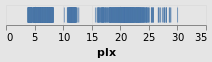
Open this visualization in the Vega Editor
let enc = encoding
. position X [ PName "plx", PmType Quantitative ]
conf = configure
. configuration (BackgroundStyle "rgba(0, 0, 0, 0.1)")
in toVegaLite
[ dataFromUrl "https://raw.githubusercontent.com/DougBurke/hvega/master/hvega/data/gaia-aa-616-a10-table1a.no-header.tsv" [TSV]
, mark Tick []
, enc []
, conf []
]
If you want a transparent background (as was the default with Vega-Lite 3 and earlier), you would use
configuration(BackgroundStyle"rgba(0, 0, 0, 0)")
Challenging the primacy of the x axis
stripPlotY :: VegaLite Source #
There is nothing that forces us to use the x axis, so let's
try a vertical strip plot. To do so requires changing only
one character in the specifiction, that is the first argument to
position is now Y rather than X:
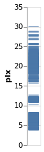
Open this visualization in the Vega Editor
let enc = encoding
. position Y [ PName "plx", PmType Quantitative ]
in toVegaLite
[ dataFromUrl "https://raw.githubusercontent.com/DougBurke/hvega/master/hvega/data/gaia-aa-616-a10-table1a.no-header.tsv" [TSV]
, mark Tick []
, enc []
]
Data sources
Since we are going to be using the same data source, let's define it here:
gaiaData = let addFormat n = (n,FoNumber) cols = [ "RA_ICRS", "DE_ICRS", "Gmag", "plx", "e_plx" ] opts = [Parse(map addFormat cols) ] in dataFromUrl "https://raw.githubusercontent.com/DougBurke/hvega/master/hvega/data/gaia-aa-616-a10-table1a.no-header.tsv" opts
The list argument to dataFromUrl allows for some customisation of
the input data. Previously I used [ to specify the data is in
tab-separated format, but it isn't actually needed here (since the
file name ends in ".tsv"). However, I have now explicitly defined how
to parse the numeric columns using TSV]Parse: this is because the columns
are read in as strings for this file by default, which actually doesn't
cause any problems in most cases, but did cause me significant problems
at one point during the development of the tutorial! There is limited
to no feedback from the visualizer for cases like this (perhaps I should
have used the Javascript console), and I only realised the problem thanks
to the Data Viewer tab in the
Vega Editor
(after a
suggestion from a colleague).
Data can also be defined algorithmically - using dataSequence and
dataSequenceAs - or inline - with dataFromColumns or
dataFromRows - or directly from JSON (as a Value) using
dataFromJson.
Examples showing dataFromColumns are the pieChart andskyPlotWithGraticules plots,
but let's not peak ahead!
Adding color as an encoding
stripPlotWithColor :: VegaLite Source #
One question would be how the parallaxes vary by cluster: as parallax is measuring distance, then are the clusters similar distances away from us, or is there a range of values? A first look is to use another "channel" to represent (i.e. encode) the cluster:
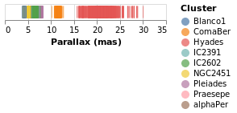
Open this visualization in the Vega Editor
let enc = encoding
. position X [ PName "plx", PmType Quantitative, PAxis [ AxTitle "Parallax (mas)" ] ]
. color [ MName "Cluster", MmType Nominal ]
in toVegaLite
[ gaiaData
, mark Tick []
, enc []
]
Now each tick mark is colored by the cluster, and a legend is automatically
added to indicate this mapping. Fortunately the number of clusters in the
sample is small enough to make this readable! The color function has
added this mapping, just by giving the column to use (with MName) and
its type (MmType). The constructors generally begin with P for
position and M for mark, and as we'll see there are other property
types such as facet and text.
Vega-Lite supports several data types, represented
by the Measurement type. We have already seen Quantitative, which
is used for numeric data, and here we use Nominal for the clusters,
since they have no obvious ordering.
The labelling for the X axis has been tweaked using PAxis, in this
case the default value for the label (the column name) has been
over-ridden by an explicit value.
stripPlotWithColor2 :: VegaLite Source #
As of Vega-Lite version 4.14 we can now drop the type information when
it can be inferred. I am a little hazy of the rules, so I am going to
include the information (as it also means I don't have to change
the existing code!). However, as an example, we don't need to
add the MmType Nominal setting to the color channel, since the
following creates the same visualization as stripPlotWithColor:
Open this visualization in the Vega Editor
let enc = encoding
. position X [ PName "plx", PmType Quantitative, PTitle "Parallax (mas)" ]
. color [ MName "Cluster" ]
in toVegaLite
[ gaiaData
, mark Tick []
, enc []
]
Note that as well as removing MmType Nominal from the color encoding, I have
switched to the PTitle option (which is the same as PAxis [AxTitle ...].
Comparing Ordinal with Nominal data types
It is instructive to see what happens if we change the mark type for
the color encoding from Nominal to Ordinal.
stripPlotWithColorOrdinal :: VegaLite Source #
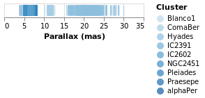
Open this visualization in the Vega Editor
let enc = encoding
. position X [ PName "plx", PmType Quantitative, PAxis [ AxTitle "Parallax (mas)" ] ]
. color [ MName "Cluster", MmType Ordinal ]
in toVegaLite
[ gaiaData
, mark Tick []
, enc []
]
As can be seen, the choice of color scale has changed to one more appropriate for an ordered set of values.
A Pie Chart
Before adding a second axis, let's temporarily look at another
"one dimensiona" chart, namel the humble pie chart.
The Arc mark type allows you to create pie charts, as well as more
complex visualizations which we won't discuss further in this
tutorial.
In this example we embed the data for the pie chart - namely the number
of stars per cluster - in the vsualization itself (using
dataFromColumns to create column data labelled "cluster" and
"count"). The position encoding is set to Theta, which is
given the star counts, and the color is set to the
Cluster name.
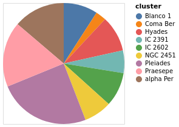
Open this visualization in the Vega Editor
let manualData =dataFromColumns[] .dataColumn"cluster" (Stringsclusters) . dataColumn "count" (Numberscounts) $ [] clusters = [ "alpha Per", "Blanco 1", "Coma Ber", "Hyades", "IC 2391" , "IC 2602", "NGC 2451", "Pleiades", "Praesepe"] counts = [ 740, 489, 153, 515, 325, 492, 400, 1326, 938] enc = encoding . positionTheta[PName "count", PmType Quantitative] . color [MName "cluster", MmType Nominal] in toVegaLite [ manualData , markArc[] , enc [] ]
pieChartWithCounting :: VegaLite Source #
There are three main changes to pieChart:
MInnerRadiusis used to impose a minimum radius on the pie slices (so leaving a hole in the center);- the
ViewStyleconfiguration is used to turn off the plot edge; - and the count value is calculated automatically by the
PAggregatemethod (summing over the "Cluster" column), rather than having a hand-generated table of values encoded in the visualization.
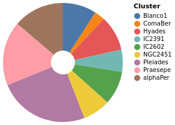
Open this visualization in the Vega Editor
let enc = encoding
. position Theta [PAggregate Count, PmType Quantitative]
. color [MName Cluster, MmType Nominal]
in toVegaLite
[ gaiaData
, mark Arc [MInnerRadius 20]
, enc []
, configure (configuration (ViewStyle [ViewNoStroke]) [])
]
Adding an axis
While the strip plot shows the range of parallaxes, it is hard to
make out the distribution of values, since the ticks overlap. Even
changing the opacity of the ticks - by adding an encoding channel
like opacity [ MNumber 0.6 ]MOpacity
property of the mark - only helps so much. Adding a second
axis is easy to do, so let's see how the parallax distribution
varies with cluster membership.
parallaxBreakdown :: VegaLite Source #
The stripPlotWithColor visualization can be changed to show two
variables just by adding a second position declaration, which
shows that the 7 milli-arcsecond range is rather crowded:
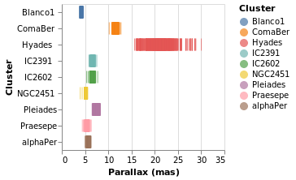
Open this visualization in the Vega Editor
let enc = encoding
. position X [ PName "plx", PmType Quantitative, PAxis [ AxTitle "Parallax (mas)" ] ]
. position Y [ PName "Cluster", PmType Nominal ]
. color [ MName "Cluster", MmType Nominal ]
in toVegaLite
[ gaiaData
, mark Tick []
, enc []
]
I have left the color-encoding in, as it makes it easier to compare to
stripPlotWithColor, even though it replicates the information provided
by the position of the mark on the Y axis. The yHistogram example
below shows how the legend can be removed from a visualization.
Creating a value to plot: aggregating data
We can also "create" data to be plotted, by aggregating data. In this case we can create a histogram showing the number of stars with the same parallax value (well, a range of parallaxes).
simpleHistogram :: Text -> VegaLite Source #
Since sensible (hopefully) defaults are provided for unspecified settings, it is relatively easy to write generic representations of a particular visualization. The following function expands upon the previous specifications by:
- taking a field name, rather than hard coding it;
- the use of
PBin[] - the addition of a second axis (
Y) which is used for the aggregated value (Count, which means that no column has to be specified withPName); - and the change from
TicktoBarfor themark.
Note that we did not have to specify how we wanted the histogram
calculation to proceed - e.g. the number of bins, the bin widths,
or edges - although we could have added this, by using a non-empty
list of BinProperty values with PBin, if the defaults are not
sufficient.
simpleHistogram :: T.Text -> VegaLite
simpleHistogram field =
let enc = encoding
. position X [ PName field, PmType Quantitative, PBin [] ]
. position Y [ PAggregate Count, PmType Quantitative ]
in toVegaLite
[ gaiaData
, mark Bar []
, enc []
]
parallaxHistogram :: VegaLite Source #
With simpleHistogram it becomes easy to get a histogram of the parallax
values:
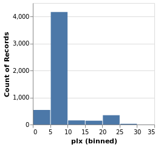
Open this visualization in the Vega Editor
parallaxHistogram = simpleHistogram "plx"We can see that although parallaxes around 20 to 25 milli-arcseconds
dominated the earlier visualizations, such as stripPlotWithColor,
most of the stars have a much-smalled parallax, with values
in the range 5 to 10.
gmagHistogram :: VegaLite Source #
A different column (or field) of the input data can be viewed, just by changing the name in the specification:
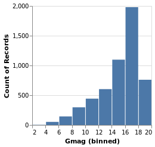
Open this visualization in the Vega Editor
gmagHistogram = simpleHistogram "Gmag"
Here we can see that the number of stars with a given magnitude rises up until a value of around 18, and then drops off.
Changing the scale of an axis
In the case of parallaxHistogram, the data is dominated by
stars with small parallaxes. Changing the scale of the
Y axis to use a logarithmic, rather than linear, scale might
provide more information:
ylogHistogram :: VegaLite Source #
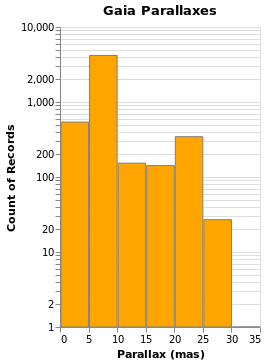
Open this visualization in the Vega Editor
let enc = encoding
. position X [ PName "plx", PmType Quantitative, PBin [], PAxis [ AxTitle "Parallax (mas)" ] ]
. position Y [ PAggregate Count, PmType Quantitative, PScale [ SType ScLog ] ]
in toVegaLite
[ gaiaData
, mark Bar [ MFill "orange", MStroke "gray" ]
, enc []
, height 300
, title "Gaia Parallaxes" []
]
There are four new changes to the visualization created by simpleHistogram (since PAxis
has been used above):
- an explicit choice of scaling for the Y channel (using
PScale); - the fill (
MFill) and edge (MStroke) colors of the histogram bars are different; - the height of the overall visualization has been increased;
- and a title has been added.
If you view this in the Vega Editor you will see the following warning:
A log scale is used to encode bar's y. This can be misleading as the height of the bar can be arbitrary based on the scale domain. You may want to use point mark instead.
Stacked Histogram
gmagHistogramWithColor :: VegaLite Source #
A color encoding can also be added. When used with the Tick mark -
stripPlotWithColor - the result was that each tick mark was colored
by the "Cluster" field, but for the Bar mark the result is that
the bars are stacked together. I have also taken the opportunity to
widen the plot (width); define the binning scheme used, with Step
1AxValues.
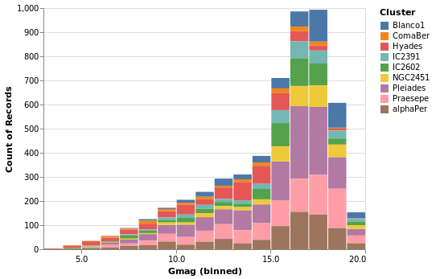
Open this visualization in the Vega Editor
let enc = encoding
. position X [ PName "Gmag", PmType Quantitative, binning, axis ]
. position Y [ PAggregate Count, PmType Quantitative ]
. color [ MName "Cluster", MmType Nominal ]
binning = PBin [ Step 1 ]
axis = PAxis [ AxValues (Numbers [ 0, 5 .. 20 ]) ]
in toVegaLite
[ gaiaData
, mark Bar []
, enc []
, height 300
, width 400
]
Note that hvega will allow you to combine a color encoding with a ScLog
scale, even though a Vega-Lite viewer will not display the
resulting Vega-Lite specification, saying
Cannot stack non-linear scale (log)
gmagLineWithColor :: VegaLite Source #
Notice how we never needed to state explicitly that we wished our bars
to be stacked. This was reasoned directly by Vega-Lite based on the
combination of bar marks and color channel encoding. If we were to
change just the mark function from Bar to Line, Vega-Lite produces an
unstacked series of lines, which makes sense because unlike bars,
lines do not occlude one another to the same extent.
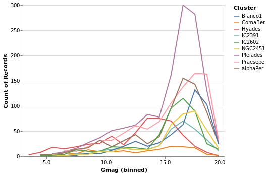
Open this visualization in the Vega Editor
let enc = encoding
. position X [ PName "Gmag", PmType Quantitative, binning, axis ]
. position Y [ PAggregate Count, PmType Quantitative ]
. color [ MName "Cluster", MmType Nominal ]
binning = PBin [ Step 1 ]
axis = PAxis [ AxValues (Numbers [ 0, 5 .. 20 ]) ]
in toVegaLite
[ gaiaData
, mark Line []
, enc []
, height 300
, width 400
]
You don't have to just count
The previous histogram visualizations have taken advantage of Vega-Lite's
ability to bin up (Count) a field, but there are a number of aggregation
properties (as defined by the Operation type). For example, there
are a number of measures of the "spread" of a population, such as
the sample standard deviation (Stdev).
You can also synthesize new data based on existing data, with the
transform operation. Unlike the encoding function, the order
of the arguments to transform do matter, as they control the
data flow (e.g. you can not filter a data set if you have not
created the field to be filtered).
yHistogram :: VegaLite Source #
The aim for this visualization is to show the spread in the Gmag field
for each cluster, so we now swap the axis on which the aggregate is
being applied (so that the cluster names appear on the y axis),
and hide the legend that is applied (using MLegend []
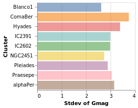
Open this visualization in the Vega Editor
let enc = encoding
. position X [ PName "Gmag", PmType Quantitative, PAggregate Stdev ]
. position Y [ PName "Cluster", PmType Nominal ]
. color [ MName "Cluster", MmType Nominal, MLegend [] ]
in toVegaLite
[ gaiaData
, mark Bar [ MOpacity 0.6 ]
, enc []
]
The bar opacity is reduced slightly with 'MOpacity 0.6' so that the
x-axis grid lines are visible. An alternative would be to change the
AxZIndex value for the X encoding so that it is drawn on top of
the bars.
starCount :: VegaLite Source #
Aggregation can happen in the position channel - as we've seen with
the PAggregate option - or as a transform, where we create
new data to replace or augment the existing data. In the following
example I use the aggregate transform to calculate the number of
rows in the original dataset per cluster with the
Count operation. This effectively replaces
the data, and creates a new one with the fields "Cluster" and
"count".
The other two major new items in this visualization are that the
X axis has been ordered to match the Y axis (using ByChannel and
PSort in the position encoding), and I have specified my own SVG
definition for the symbols with SymPath and MShape.
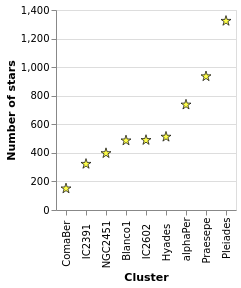
Open this visualization in the Vega Editor
let trans =transform.aggregate[opAsCount"" "count" ] [ "Cluster" ] enc = encoding . position X [ PName "Cluster" , PmType Nominal ,PSort[ByChannelChY] ] . position Y [ PName "count" , PmType Quantitative , PAxis [ AxTitle "Number of stars" ] ] star =SymPath"M 0,-1 L 0.23,-0.23 L 1,-0.23 L 0.38,0.21 L 0.62,0.94 L 0,0.49 L -0.62,0.94 L -0.38,0.21 L -1,-0.23 L -0.23,-0.23 L 0,-1 z" in toVegaLite [ gaiaData , trans [] , enc [] , markPoint[MShapestar , MStroke "black" ,MStrokeWidth1 , MFill "yellow" ,MSize100 ] ]
Notes:
- the star design is based on a Wikipedia design, after some hacking and downsizing (such as losing the cute eyes);
- when using
CountwithopAs, the firstFieldNameargument is ignored, so I set it to the empty string""(it's be great if the API were such we didn't have to write dummy arguments, but at presenthvegadoesn't provide this level of safety); - although the order of operations of
transformis important, here I only have one (theaggregatecall); - and the order of the arguments to
toVegaLitedoes not matter (so you can have thetransformappear beforeencodingor after it).
{kind=link}
starCount2 :: VegaLite Source #
I've shown that the number of stars per cluster increases when ordered by increasing count of the number of stars per cluster, which is perhaps not the most informative visualization. How about if I ask if there's a correlation between number of stars and distance to the cluster (under the assumption that objects further away can be harder to detect, so there might be some form of correlation)?
To do this, I tweak starCount so that we also calculate the
parallax to each cluster in the transform - in this case taking
the median value of the distribution thanks to the Median operation - and
then using this new field to order the X axis with ByFieldOp. Since
parallax is inversely correlated with distance we use the
Descending option to ensure the clusters are drawn from near to
far. We can see that there is no obvious relation with distance.
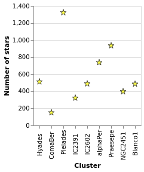
Open this visualization in the Vega Editor
let trans = transform
. aggregate [ opAs Count "" "count"
, opAs Median "plx" "plx_med"
]
[ "Cluster" ]
enc = encoding
. position X [ PName "Cluster"
, PSort [ ByFieldOp "plx_med" Max
, Descending
]
]
. position Y [ PName "count"
, PmType Quantitative
, PAxis [ AxTitle "Number of stars" ]
]
star = SymPath "M 0,-1 L 0.23,-0.23 L 1,-0.23 L 0.38,0.21 L 0.62,0.94 L 0,0.49 L -0.62,0.94 L -0.38,0.21 L -1,-0.23 L -0.23,-0.23 L 0,-1 z"
in toVegaLite [ gaiaData
, trans []
, enc []
, mark Point [ MShape star
, MStroke "black"
, MStrokeWidth 1
, MFill "yellow"
, MSize 100
]
]
Notes:
- I find the "Data Viewer" section of the Vega Editor rather useful when creating new data columns or structures, as you can actually see what has been created (I find Firefox works much better than Chrome here);
- the use of
ByFieldOphere is a bit un-settling, as you need to give it an aggregation-style operation to apply to the data field, but in this case we have already done this withopAs(so I pickMaxas we just need something that copies the value over).
We revisit this data in layeredCount.
densityParallax :: VegaLite Source #
Vega-Lite supports a number of data transformations, including
several "pre-canned" transformations, such as a
kernel-density estimator, which I will use here to
look for structure in the parallax distribution. The earlier
use of a fixed-bin histogram - parallaxHistogram and ylogHistogram -
showed a peak around 5 to 10 milli-arcseconds, and a secondary
one around 20 to 25 milli-arcseconds, but can we infer anything more
from the data?
I have already shown that the transform
function works in a similar manner to encoding, in that
it is applied to one or more transformations. In this
example I use the density transform - which is new to Vega Lite 4 -
to "smooth" the data without having to pre-judge the data
(although there are options to configure the density estimation).
The transform creates new fields - called "value" and "density"
by default - which can then be displayed as any other field. In this
case I switch from Bar or Line to use the Area encoding, which
fills in the area from the value down to the axis.
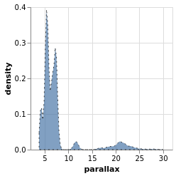
Open this visualization in the Vega Editor
let trans = transform
. density "plx" []
enc = encoding
. position X [ PName "value"
, PmType Quantitative
, PAxis [ AxTitle "parallax" ]
]
. position Y [ PName "density", PmType Quantitative ]
in toVegaLite
[ gaiaData
, mark Area [ MOpacity 0.7
, MStroke "black"
, MStrokeDash [ 2, 4 ]
, ]
, trans []
, enc []
]
The parallax distribution shows multiple peaks within the 5 to 10 milli-arcsecond range, and separate peaks at 12 and 22 milli-arcseconds.
The properties of the area mark are set here to add a black,
dashed line around the edge of the area. The DashStyle configures
the pattern by giving the lengths, in pixels,
of the "on" and "off" segments, so here the gaps are twice the
length of the line segments. This was done more to show that it
can be done, rather than because it aids this particular visualization!
densityParallaxGrouped :: VegaLite Source #
The density estimation can be configured using DensityProperty.
Here we explicitly label the new fields to create (rather than
use the defaults), and ensure the calculation is done per cluster.
This means that the data range for each cluster is used to
perform the KDE, which in this case is useful (as it ensures the
highest fidelity), but there are times when you may wish to ensure
a consistent scale for the evaluation (in which case you'd use
the DnExtent option, as well as possibly DnSteps, to define
the grid). The final change is to switch from density estimation
to counts for the dependent axis.
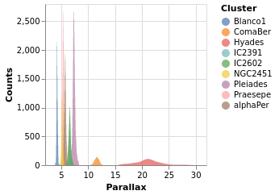
Open this visualization in the Vega Editor
let trans = transform
. density "plx" [ DnAs "xkde" "ykde"
, DnGroupBy [ "Cluster" ]
, DnCounts True
]
enc = encoding
. position X [ PName "xkde"
, PmType Quantitative
, PAxis [ AxTitle "Parallax" ]
]
. position Y [ PName "ykde"
, PmType Quantitative
, PAxis [ AxTitle "Counts" ]
]
. color [ MName "Cluster"
, MmType Nominal
]
in toVegaLite
[ gaiaData
, mark Area [ MOpacity 0.7 ]
, trans []
, enc []
]
Note how the clusters separate out in pretty cleanly, but - as
also shown in the pointPlot visualization below - it is pretty
busy around 7 milli arcseconds.
The counts here (the Y axis) are significantly larger than
seen than the actual count of stars, shown in starCount. It
appears that the DnCounts TruecompareCounts plot below.
Plotting with points
At this point we make a signifiant detour from the Elm Vega-Lite
walkthtough, and look a bit more at the Point mark, rather than creating
small-multiple plots. Don't worry, we'll get to them later.
I apologize for the alliterative use of point here.
pointPlot :: VegaLite Source #
Here I use the Point mark to display the individual
Gmag, plx pairs, encoding by both color and 'shape.
Since the encoding uses the same field of the data (the Cluster
name), Vega-Lite is smart enough to only display one legend,
which contains the point shape and color used for each cluster.
Since the parallax values are bunched together at low values,
a logarithmic scale (ScLog) is used for the y axis, along with
commands to define the actual axis domain - by turning off the
IsNice support and listing the minimum and maximum values
for the axis with SDomain.
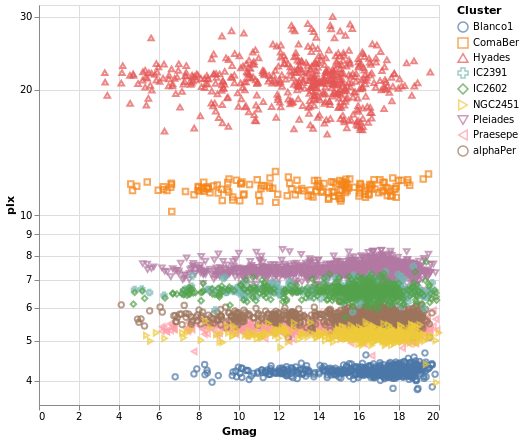
Open this visualization in the Vega Editor
let enc = encoding
. position X [ PName "Gmag", PmType Quantitative ]
. position Y [ PName "plx", PmType Quantitative, PScale scaleOpts ]
. color cluster
. shape cluster
scaleOpts = [ SType ScLog, SDomain (DNumbers [3.5, 32]), SNice (IsNice False) ]
cluster = [ MName "Cluster", MmType Nominal ]
,
in toVegaLite [ gaiaData
, mark Point []
, enc []
, width 400
, height 400
]
We can see that each cluster appears to have a separate parallax
value (something we have seen in earlier plots, such as parallaxBreakdown),
and that it doesn't really vary with Gmag. What this is telling
us is that for these star clusters, the distance to each member star
is similar, and that they are generally at different distances
from us. However, it's a bit hard to tell exactly what is going
on around 5 to 6 milli arcseconds, as the clusters overlap here.
This line of thinking leads us nicely to map making, but before we
try some cartography, I wanted to briefly provide some context for
these plots. The
parallax of a star
is a measure of its distance from us, but it is an inverse relationship,
so that nearer stars have a larger parallax than those further from us.
The Gmag column measures the apparent brightness of the star, with the
G part indicating what
part of the spectrum
is used (for Gaia, the G band is pretty broad, covering much of
the visible spectrum), and the mag part is because optical Astronomy
tends to use
- the logarithm of the measured flux
- and then subtract this from a constant
so that larger values mean fainter sources. These are also apparent magnitues, so that they measure the flux of the star as measured at Earth, rather than its intrinsic luminosity (often defined as an object's absolute magnitude).
We can see that the further the cluster is from us - that is, as we move down this graph to smaller parallax values - then the smallest stellar magnitude we can see in a cluster tends to increase, but that there are stars up to the maximum value (20) in each cluster. This information can be used to look at the distribution of absolute magnitudes of stars in a cluster, which tells us about its evolutionary state - such as is it newly formed or old - amongst other things. However, this is straying far from the aim of this tutorial, so lets get back to plotting things.
Making a map
We have some hint that the different clusters are distinct objects
in space, in that they appear to be different distances from us,
but where does the "cluster" in the name "Stellar Cluster"
come from? Well, we can try plotting up the position of each star
on the sky - using the RA_ICRS and DE_ICRS fields - to find out.
The following specification should only contain one new feature - other
than sneakily switching from Point to Circle type for the mark - and
that is displaying the x axis (namely Right Ascension) in reverse (using
PSort [ Descending ]clusterCenters).
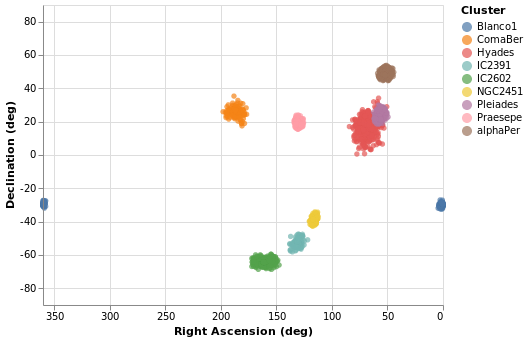
Open this visualization in the Vega Editor
let enc = encoding
. position X (axOpts "RA_ICRS" "Right Ascension (deg)" ++ [ raScale, PSort [ Descending ] ])
. position Y (axOpts "DE_ICRS" "Declination (deg)" ++ [ decScale ])
. color [ MName "Cluster", MmType Nominal ]
axOpts field lbl = [ PName field, PmType Quantitative, PAxis [ AxTitle lbl ]]
scaleOpts minVal maxVal = [ SDomain (DNumbers [ minVal, maxVal ]), SNice (IsNice False) ]
raScale = PScale (scaleOpts 0 360)
decScale = PScale (scaleOpts (-90) 90)
in toVegaLite [ gaiaData
, mark Circle []
, enc []
, width 400
, height 300
]
We can see that these clusters are indeed localised on the sky, with Hyades looking like it covers the largest area. However, we should be careful and not forget either Grover's hard work or Father Ted's explanation to Father Dougal, since these clusters are different distances from us, which makes size a tricky thing to measure from this plot.
There is also the fact that I have used possibly the worst way of displaying the Right Ascension and Declination data. Although the night sky is not the same as the Earth's surface, the issues when trying to display the Globe on a flat surface also apply to displaying up the sky. For this plot the distortions near the pole are huge, although fortunately we don't have any clusters too close to either pole.
Using a projection
Vega-Lite supports a large number of projections - via the
Projection type - which we use below to create
a similar visualization to posPlot. Here I use the
Longitude and Latitude channels, along with a
Mercator projection, to display the data.
The trick in this case is that longitude runs from -180 to 180
degrees, but the data has Right Ascension going from 0
to 360 degrees. Here we take advantage of Vega Lite's
data transformation capabilities and create a new
column - which I call longitude - and is defined as
"Right Ascension - 360" when the Right Ascension is
greater than 180, otherwise it is just set to the
Right Ascension value. The "expression" support
is essentially a sub-set of Javascript, and the datum
object refers to the current row. The new data column
can then be used with the Longitude channel.
Thankfully the Latitude channel can use the Declination values
without any conversion.
As can be seen, this flips the orientation compared to
posPlot, and makes the center of the plot have a
longiture (or Right Ascension), of 0 degrees.
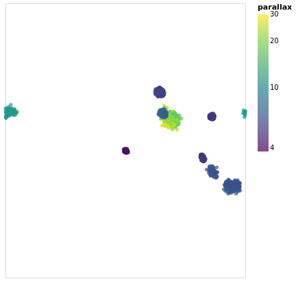
Open this visualization in the Vega Editor
let trans = transform
. calculateAs
"datum.RA_ICRS > 180 ? datum.RA_ICRS - 360 : datum.RA_ICRS"
"longitude"
axOpts field = [ PName field, PmType Quantitative ]
enc = encoding
. position Longitude (axOpts "longitude")
. position Latitude (axOpts "DE_ICRS")
. color [ MName "plx"
, MmType Quantitative
, MScale [ SType ScLog
, SScheme "viridis" []
]
, MLegend [ LTitle "parallax" ]
]
. tooltip [ TName "Cluster", TmType Nominal ]
in toVegaLite [ width 400
, height 350
, projection [ PrType Mercator ]
, gaiaData
, trans []
, enc []
, mark Circle []
]
The other major change made to posPlot is that the stars are now
color-encoded by the log of their parallax value
rather than cluster membership,
and the color scheme has been changed to use the "viridis" color
scale.
The LTitle option is set for the legend (on the
color channel) rather than use the default (which in
this case would be "plx").
Since parallax is a numeric value, with ordering (i.e. Quantitative),
the legend has changed from a list of symbols to a gradient bar.
To account for this lost of information, I have added a tooltip
encoding so that when the pointer is moved over a star its cluster
name will be displayed. This is, unfortunately,
only visible in the interactive version of the visualization.
Note that the tooltip behavior changed in Vega Lite 4 (or in the
code used to display the visualizations around this time), since
prior to this tooltips were on by default. Now tooltips have to be
explicitly enabled (with tooltip or tooltips).
From this visualization we can see that the apparent size of the cluster
(if we approximate each cluster as a circle, then we can think of the radius
of the circle as a measure of size) depends on parallax, with larger
sizes having larger parallaxes. This is because the distance to a star
is inversely-dependent on its parallax, so larger parallaxes mean the
star is closer to us. However, there is no reason that the intrinsic
size - that is its actual radius - of each cluster is the same.
We can see that although the Hyades and Pleiades clusters overlap
on the sky, they have significantly-different parallaxes (as can
be seen in pointPlot for example), with Hyades being the closer
of the two.
It is possible to add graticules - with the aptly-named
graticule function - but this requires the use of layers,
which we haven't covered yet. If you are impatient you can jump
right to skyPlotWithGraticules!
If you want to see how to "create your own projection", see
skyPlotAitoff, which uses the
Aitoff projection
(which is unfortunately not available to
Vega-Lite directly).
Choropleth with joined data
There are some things vega-lite can do, don't fit as well into the flow of looking at astronomy data! But having examples is helpful. So we bring our eyes back to earth, and demonstrate a basic "choropleth", a map - in the sense of pictures of bounded geographical regions - with data for each location indicated by color.
Don't worry, we'll soon be back staring at the stars!
The choropleth examples (there's another one later on) use a map of the United States as the data source, which we abstract out into a helper function:
usGeoData :: T.Text -> Data
usGeoData f = dataFromUrl "https://raw.githubusercontent.com/vega/vega/master/docs/data/us-10m.json" [TopojsonFeature f]
The argument gives the "topological" feature in the input file to
display (via TopojsonFeature). You can read more information on this
in the Vega-Lite documentation.
This section was contributed by Adam Conner-Sax. Thanks!
choroplethLookupToGeo :: VegaLite Source #
Our first choropleth is based on the Choropleth example from the Vega-Lite Example Gallery.
The key elements are:
- Using the
TopojsonFeaturefeature for the data source (thanks tousGeoData). - Choosing the correct "feature" name in the geographic data, here
"counties"in the argument to ourusGeoDatahelper function. - Performing a Vega-Lite lookup to join the data to be plotted (the unemployment rate)
to the geographic data. In this case, the column name in the unemployment data -
"id"given as the first argument tolookup- is the same as the column name in the geographic data, the third argument tolookup. Those can be different. - Specifying a projection, that is a mapping from (longitude, latitude) to (x,y)
coordinates. Since we are looking at data for the main-land United States of
America we use
AlbersUsa(rather than looking at the whole globe, as we did in earlier visualizations), which lets us view the continental USA as well as Alaska and Hawaii. - Using the
Geoshapemark.
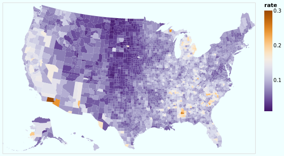
Open this visualization in the Vega Editor
let unemploymentData = dataFromUrl "https://raw.githubusercontent.com/vega/vega/master/docs/data/unemployment.tsv" []
in toVegaLite
[ usGeoData "counties"
, transform
. lookup "id" unemploymentData "id" (LuFields ["rate"])
$ []
, projection [PrType AlbersUsa]
, encoding
. color [ MName "rate", MmType Quantitative, MScale [ SScheme "purpleorange" [] ] ]
$ []
, mark Geoshape []
, width 500
, height 300
, background "azure"
]
So, we have seen how to join data between two datasets - thanks to
lookup - and display the unemployment rate (from one data source)
on a map (defined from another data source).
I have chosen a
diverging color scheme
for the rate, mainly just because I can, but also because I wanted to see how
the areas with high rates were clustered. I've also shown how the background
function can be used (it is simpler than the configuration approach
used earlier in stripPlotWithBackground).
Our next choropleth - choroplethLookupFromGeo - will show how we can join
multiple fields across data sources, but this requires understanding how
Vega-Lite handles multiple views, which is fortunately next in our
tutorial.
Layered and Multi-View Compositions
The Stacked-Histogram plot - created by gmagHistogramWithColor - showed
the distribution of the "Gmag" field by cluster, but it was hard to
compare them. A common approach in this situation is to split up
the data into multiple plots -
the small multiple
approach (also known as trellis plots) - which we can easily achieve in
Vega Lite. It also gets us back on track with the Elm walkthrough.
smallMultiples :: VegaLite Source #
Our first attempt is with the column function, which tells
Vega-Lite to create a plot for each Cluster field (and introduces
us to the F family of FacetChannel constructors).
The legend has been turned off with MLegend []
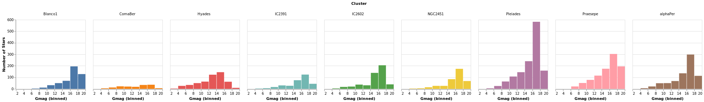
Open this visualization in the Vega Editor
let enc = encoding
. position X [ PName "Gmag", PmType Quantitative, PBin [] ]
. position Y yAxis
. color [ MName "Cluster", MmType Nominal, MLegend [] ]
. column [ FName "Cluster", FmType Nominal ]
yAxis = [ PAggregate Count
, PmType Quantitative
, PAxis [ AxTitle "Number of Stars" ]
]
in toVegaLite
[ gaiaData
, mark Bar []
, enc []
]
Since we have nine clusters in the sample, the overall visualization is too wide, unless you have a very-large monitor. Can we do better?
smallMultiples2 :: VegaLite Source #
The number of columns used in small-multiple can be defined using the
columns function. However, this requires us to:
- move the facet definition out from the encoding and into the top-level,
with the
facetFlowfunction; - and define the plot as a separate specification, and apply it
with
specificationandasSpec.
The actual syntactic changes to smallMultiples are actually
fairly minor:
let enc = encoding
. position X [ PName "Gmag", PmType Quantitative, PBin [] ]
. position Y yAxis
. color [ MName "Cluster", MmType Nominal, MLegend [] ]
yAxis = [ PAggregate Count
, PmType Quantitative
, PAxis [ AxTitle "Number of Stars" ]
]
in toVegaLite
[ gaiaData
, columns 4
, facetFlow [ FName "Cluster", FmType Nominal ]
, specification (asSpec [ mark Bar [], enc [] ])
]
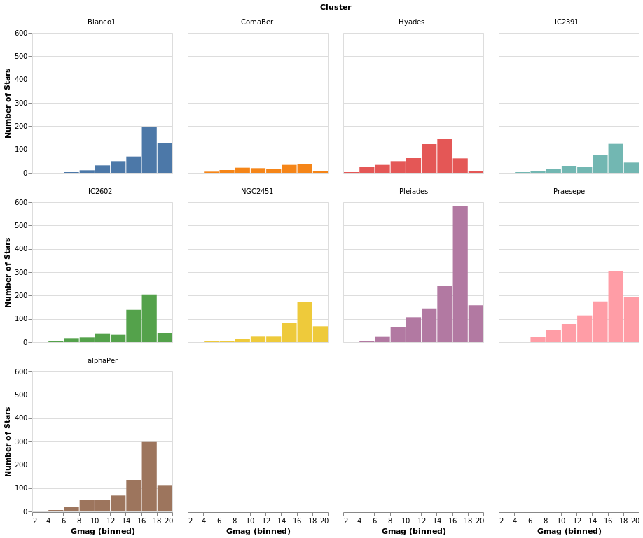
Open this visualization in the Vega Editor
Note that Vega Lite does support a "facet" field in its encodings,
but hvega follows Elm VegaLite and requires you to use this
wrapped facet approach.
I chose 4 columns rather than 3 here to show how "empty" plots
are encoded. You can see how a 3-column version looks in the
next plot, densityMultiples.
densityMultiples :: VegaLite Source #
Earlier - in densityParallaxGrouped - I used the Kernel-Density
Estimation support in Vega Lite 4 to show smoothed parallax
distributions, grouped by cluster. We can combine this with
the facetFlow approach to generate a plot per cluster
of the parallax distribution. I have used DnExtent to ensure
that the density estimation is done on the same grid for
each cluster.
The most important thing in this example is that I have
used a sensible number of columns (ending up in a three by three grid)!
The other significant changes to smallMultiples2 is that I have
used the FHeader option to control how the facet headers
are displayed: the title (which in this case was "Cluster")
has been hidden, and the per-plot labels made larger, but moved
down so that they lie within each plot. I am not 100% convinced
this is an intended use of HLabelPadding, but it seems to work!
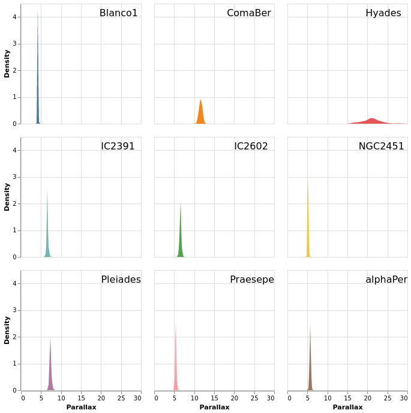
Open this visualization in the Vega Editor
let trans = transform
. density "plx" [ DnAs "xkde" "ykde"
, DnGroupBy [ "Cluster" ]
, DnExtent 0 30
]
enc = encoding
. position X [ PName "xkde"
, PmType Quantitative
, PAxis [ AxTitle "Parallax" ]
]
. position Y [ PName "ykde"
, PmType Quantitative
, PAxis [ AxTitle "Density" ]
]
. color [ MName "Cluster"
, MmType Nominal
, MLegend []
]
headerOpts = [ HLabelFontSize 16
, HLabelAlign AlignRight
, HLabelAnchor AEnd
, HLabelPadding (-24)
, HNoTitle
]
spec = asSpec [ enc []
, trans []
, mark Area [ ]
]
in toVegaLite
[ gaiaData
, columns 3
, facetFlow [ FName "Cluster"
, FmType Nominal
, FHeader headerOpts
]
, specification spec
]
One plot, two plot, red plot, blue plot
There are four ways in which multiple views may be combined:
- The facet operator takes subsets of a dataset (facets) and
separately applies the same view specification to each of
those facets (as seen with the
columnfunction above). Available functions to create faceted views:column,row,facet,facetFlow, andspecification. - The layer operator creates different views of the data but
each is layered (superposed) on the same same space; for example
a trend line layered on top of a scatterplot.
Available functions to create a layered view:
layerandasSpec. - The concatenation operator allows arbitrary views (potentially
with different datasets) to be assembled in rows or columns.
This allows 'dashboards' to be built.
Available functions to create concatenated views:
vConcat,hConcat, andasSpec. - The repeat operator is a concise way of combining multiple views
with only small data-driven differences in each view.
Available functions for repeated views:
repeatandspecification.
We start with a "basic" plot for the dataset: the median value of the parallax of the stars in each cluster.
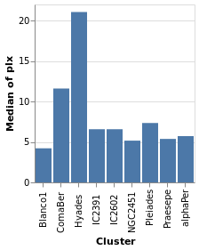
Open this visualization in the Vega Editor
let plx = position Y [ PName "plx", PmType Quantitative, PAggregate Median ]
cluster = position X [ PName "Cluster", PmType Nominal ]
enc = encoding . cluster . plx
in toVegaLite
[ gaiaData
, mark Bar []
, enc []
]
Composing layers
layeredPlot :: VegaLite Source #
We start our exploration by combining two visualizations, layering
one on top of the other. The base plot shows the same data as
basePlot, and then on top we will show a horizontal line that
indicates the median parallax for all the stars in the sample.
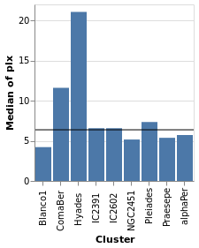
Open this visualization in the Vega Editor
let plx = position Y [ PName "plx", PmType Quantitative, PAggregate Median ]
cluster = position X [ PName "Cluster", PmType Nominal ]
perCluster = [ mark Bar [], encoding (cluster []) ]
allClusters = [ mark Rule [] ]
in toVegaLite
[ gaiaData
, encoding (plx [])
, layer (map asSpec [perCluster, allClusters])
]
For this visualization, the specification starts with the data
source and an encoding, but only for the y axis (which means
that all layered plots use the same encoding for the axis). The
layer function introduces the different visualizations that
will be combined, each as there own "specification" (hence
the need to apply asSpec to both perCluster and allClusters).
Note that there is no x-axis encoding for the Rule, since the
data applies to all clusters (i.e. it should span the
whole visualization).
layeredDiversion :: VegaLite Source #
This example is similar to layeredPlot but includes an x-axis
encoding for the second layer. We use this to show the range of the
data - so the minimum to maximum parallax range of each cluster - with
the Rule type. The difference to the previous plot is that an
extra positional encoding is added (Y2) to define the end point
of each line (Y is used as the start point).
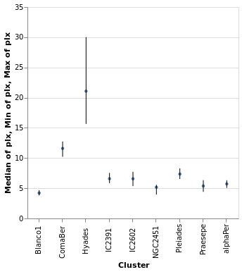
Open this visualization in the Vega Editor
let plx op = position Y [ PName "plx", PmType Quantitative, PAggregate op ]
cluster = position X [ PName "Cluster", PmType Nominal ]
median = [ mark Circle [ MSize 20 ]
, encoding (plx Median [])
]
range = [ mark Rule [ ]
, encoding
. plx Min
. position Y2 [ PName "plx", PAggregate Max ]
$ []
]
in toVegaLite
[ gaiaData
, encoding (cluster [])
, layer (map asSpec [ median, range ])
, width 300
, height 300
]
The MSize option is used to change the size of the circles so that they
do not drown out the lines (the size value indicates the area of the mark,
and so for circles the radius is proportional to the square root of this
size value; in practical terms I adjusted the value until I got something
that looked sensible).
Note that the y axis is automatically labelled with the different operation types that were applied - median, minimum, and maximum - although there is no indication of what marks map to these operations.
layeredCount :: VegaLite Source #
In this example (adapted from an example provided by Jo Wood)
I display the same data as in starCount, but
as two layers: the first is a histogram (using the Bar mark),
and the second displays the count value as a label with the
Text mark.
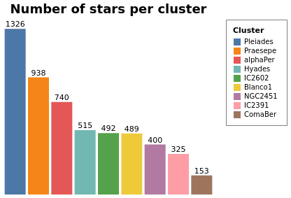
Open this visualization in the Vega Editor
let trans = transform
. aggregate [ opAs Count "" "count" ]
[ "Cluster" ]
chanSort = [ ByChannel ChY, Descending ]
baseEnc = encoding
. position X [ PName "Cluster"
, PmType Nominal
, PSort chanSort
, PAxis []
]
. position Y [ PName "count"
, PmType Quantitative
, PAxis []
]
barEnc = baseEnc
. color [ MName "Cluster"
, MmType Nominal
, MLegend [ LStrokeColor "gray"
, LPadding 10
]
, MSort chanSort
]
labelEnc = baseEnc
. text [ TName "count", TmType Quantitative ]
barSpec = asSpec [ barEnc [], mark Bar [] ]
labelSpec = asSpec [ labelEnc [], mark Text [ MdY (-6) ] ]
cfg = configure
. configuration (ViewStyle [ViewNoStroke])
in toVegaLite [ width 300
, height 250
, cfg []
, gaiaData
, title "Number of stars per cluster" [ TFontSize 18 ]
, trans []
, layer [ barSpec, labelSpec ]
]
Both axes have been dropped from this visualization since
the cluster name can be found from the legend and the
count is included in the plot. The same sort order is
used for the X axis and the color mapping, so that its
easy to compare (the first item in the legend is the
cluster with the most counts). Note that this changes the
color mapping (cluster to color) compared to previous
plots such as parallaxBreakdown.
skyPlotWithGraticules :: VegaLite Source #
As promised earlier (in skyPlot), now that we have layers, we can
add graticules to a projection. In this case I create two graticule layers,
the "base" layer (grats), which creates the grey lines that cover
the map - using a spacing of 60 degrees (4 hours) for longitude and
15 degrees for latitude - and then an extra layer (grats0), which shows blue lines
at longitude seprations of 180 degrees
and latitude spacings of 90 degrees. In this case the central horizontal and
vertical lines represent 0 degrees, and the one at the left shows
-180 degrees. There are no latitude lines for -90 or +90 since the
default is to stop at ±85 degrees (see GrExtent for a way to
change this).
I added the second graticule layer to see if I could get by without
labels for the grid lines, but decided this did not work out too well,
so ended with two layers, one each for the Right Ascension and
Declination values, using dataFromColumns to manually create the
label positions and label content to display with the Text mark.
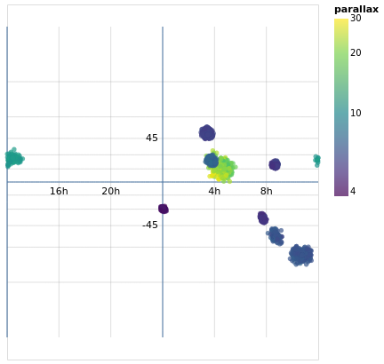
Open this visualization in the Vega Editor
let trans = transform
. calculateAs
"datum.RA_ICRS > 180 ? datum.RA_ICRS - 360 : datum.RA_ICRS"
"longitude"
axOpts field = [ PName field, PmType Quantitative ]
enc = encoding
. position Longitude (axOpts "longitude")
. position Latitude (axOpts "DE_ICRS")
. color [ MName "plx"
, MmType Quantitative
, MScale [ SType ScLog
, SScheme "viridis" []
]
, MLegend [ LTitle "parallax" ]
]
. tooltip [ TName "Cluster", TmType Nominal ]
stars = asSpec [ gaiaData, trans [], enc [], mark Circle [] ]
grats = asSpec [ graticule [ GrStep (60, 15) ]
, mark Geoshape [ MStroke "grey"
, MStrokeOpacity 0.5
, MStrokeWidth 0.5
]
]
grats0 = asSpec [ graticule [ GrStep (180, 90)
]
, mark Geoshape [ ]
]
raData = dataFromColumns []
. dataColumn "x" (Numbers [ -120, -60, 60, 120 ])
. dataColumn "y" (Numbers [ 0, 0, 0, 0 ])
. dataColumn "lbl" (Strings [ "16h", "20h", "4h", "8h" ])
decData = dataFromColumns []
. dataColumn "x" (Numbers [ 0, 0 ])
. dataColumn "y" (Numbers [ -45, 45 ])
. dataColumn "lbl" (Strings [ "-45", "45" ])
encLabels = encoding
. position Longitude (axOpts "x")
. position Latitude (axOpts "y")
. text [ TName "lbl", TmType Nominal ]
raLabels = asSpec [ raData []
, encLabels []
, mark Text [ MAlign AlignCenter
, MBaseline AlignTop
, MdY 5
]
]
decLabels = asSpec [ decData []
, encLabels []
, mark Text [ MAlign AlignRight
, MBaseline AlignMiddle
, MdX (-5)
]
]
in toVegaLite [ width 400
, height 350
, projection [ PrType Mercator ]
, layer [ grats, grats0, stars, raLabels, decLabels ]
]
The layers are drawn in the order they are specified, which is why the grid lines are drawn under the data (and labels).
You can see the distortion in this particular projection (the
Mercator projection),
as the spacing between the latitude lines increases as you move towards the
bottom and top of the plot. There are a number of other projections you
can chose from, such as the Orthographic projection I use in
concatenatedSkyPlot.
Concatenating views
concatenatedPlot :: VegaLite Source #
Instead of layering one view on top of another (superposition), we can place them side by side in a row or column (juxtaposition). In Vega-Lite this is referred to as concatenation:
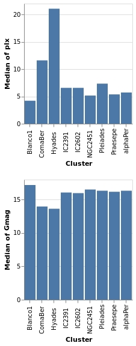
Open this visualization in the Vega Editor
let enc field = encoding
. position X [ PName "Cluster", PmType Nominal ]
. position Y [ PName field, PmType Quantitative, PAggregate Median ]
parallaxes = [ mark Bar [], enc "plx" [] ]
magnitudes = [ mark Bar [], enc "Gmag" [] ]
specs = map asSpec [ parallaxes, magnitudes ]
in toVegaLite
[ gaiaData
, vConcat specs
]
The hConcat function would align the two plots horizontally,
rather than vertically (and is used in concatenatedSkyPlot).
Note that as the axes are identical apart from the field for the y axis, the encoding has been moved into a function to enforce this constraint (this ensures the x axis is the same, which makes it easier to visually compare the two plots). However, there is no requirement that the two plots be "compatible" (they could use different data sources).
concatenatedPlot2 :: VegaLite Source #
The alignment of the plots can be adjusted with spacing, which we
use here to remove the vertical gap between the two plots (the
example is written so that we can see the only difference between
the two plot specifications is the addition of PAxis []
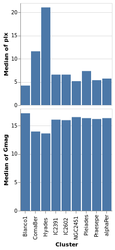
Open this visualization in the Vega Editor
let enc field flag = encoding
. position X ([ PName "Cluster", PmType Nominal ] ++
if flag then [ PAxis [] ] else [])
. position Y [ PName field, PmType Quantitative, PAggregate Median ]
parallaxes = [ mark Bar [], enc "plx" True [] ]
magnitudes = [ mark Bar [], enc "Gmag" False [] ]
specs = map asSpec [ parallaxes, magnitudes ]
in toVegaLite
[ gaiaData
, spacing 0
, vConcat specs
]
Even though we set spacing to 0 there is still a small gap between
the plots: this can be removed by using bounds Flush
concatenatedSkyPlot :: VegaLite Source #
In skyPlotWithGraticules I used the Mercator projection to display
the stars on the sky, but promised I would also show you data using the
Orthographic projection.
The main specification (that is, the argument of toVegaLite) starts
with a change to the plot defaults, using configure to ensure
that no border is drawn around the plot (note that in combinedPlot
I do the same thing, but by setting the stroke color to
Just "transparent" rather than Nothing). The default data
stream is set up, to ensure we have "longitude" and
"DE_ICRS" values to display. It then has three
versions of the same visualization, varying only on rotation angle and
label, stacked horizontally with hConcat.
Each plot - created with the rSpec helper function - defines
a plot size, uses the Orthographic projection with the
given rotation (the lambda term of PrRotate) to change the
center of the display, and then the plot itself is formed from
four layers:
sphereis used to indicate the area of the plot covered by the sky (filled with a blue variant);- graticules are drawn at every 30 degrees (longitude, so 2 hours in Right Ascension) and 15 degrees (latitude);
- the stars are drawn using color to encode the parallax of the star and the symbol shape the cluster membership (although the density of points is such that it can be hard to make the shapes out);
- and a label is added at the center of the plot to indicate the Right Ascension (the label could be determined automatically from the rotation angle, but it was easier to just specify it directly).
Since the data values have two different encodings - color and shape -
there are two legends added. I place them in different locations using
LOrient: the parallax goes to the right of the plots (which is the
default) and the symbol shapes to the bottom. Both use larger-than-default
font sizes for the text (title and label).
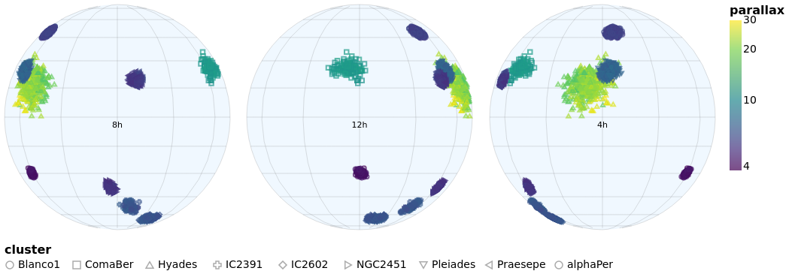
let trans = transform
. calculateAs
"datum.RA_ICRS > 180 ? datum.RA_ICRS - 360 : datum.RA_ICRS"
"longitude"
axOpts field = [ PName field, PmType Quantitative ]
legend ttl o = MLegend [ LTitle ttl
, LOrient o
, LTitleFontSize 16
, LLabelFontSize 14
]
enc = encoding
. position Longitude (axOpts "longitude")
. position Latitude (axOpts "DE_ICRS")
. color [ MName "plx"
, MmType Quantitative
, MScale [ SType ScLog
, SScheme "viridis" []
]
, legend "parallax" LORight
]
. shape [ MName "Cluster"
, MmType Nominal
, legend "cluster" LOBottom
]
. tooltip [ TName "Cluster", TmType Nominal ]
stars = asSpec [ enc [], mark Point [] ]
grats = asSpec [ graticule [ GrStepMinor (30, 15) ]
, mark Geoshape [ MStroke "grey"
, MStrokeOpacity 0.5
, MStrokeWidth 0.5
]
]
lblData r h0 =
let r0 = -r
lbl = h0 <> "h"
in dataFromColumns []
. dataColumn "x" (Numbers [ r0 ])
. dataColumn "y" (Numbers [ 0 ])
. dataColumn "lbl" (Strings [ lbl ])
encLabels = encoding
. position Longitude (axOpts "x")
. position Latitude (axOpts "y")
. text [ TName "lbl", TmType Nominal ]
labels r h0 = asSpec [ lblData r h0 []
, encLabels []
, mark Text [ MAlign AlignCenter
, MBaseline AlignTop
, MdY 5
]
]
bg = asSpec [ sphere, mark Geoshape [ MFill "aliceblue" ] ]
rSpec r h0 = asSpec [ width 300
, height 300
, projection [ PrType Orthographic
, PrRotate r 0 0
]
, layer [ bg, grats, stars, labels r h0 ]
]
s1 = rSpec (-120) "8"
s2 = rSpec 0 "12"
s3 = rSpec 120 "4"
setup = configure . configuration (ViewStyle [ ViewNoStroke ])
in toVegaLite [ setup []
, gaiaData
, trans []
, hConcat [ s1, s2, s3 ] ]
Repeated views
Creating the same plot but with a different field is common-enough
that Vega-Lite provides the repeat operator.
Varying fields field
repeatPlot :: VegaLite Source #
The concatenatedPlot example can be extended to view the
distribution of several fields - in this case Right Ascension,
Declination, parallax, and magnitude:
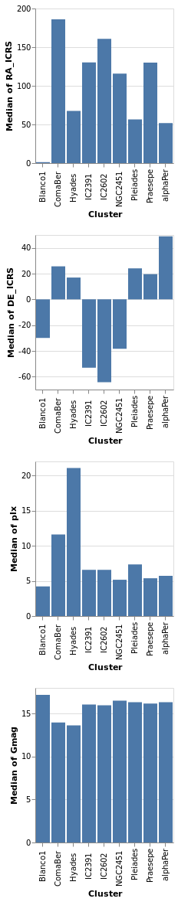
Open this visualization in the Vega Editor
let enc = encoding
. position X [ PName "Cluster", PmType Nominal ]
. position Y [ PRepeat Row, PmType Quantitative, PAggregate Median ]
spec = asSpec [ gaiaData
, mark Bar []
, enc [] ]
rows = [ "RA_ICRS", "DE_ICRS", "plx", "Gmag" ]
in toVegaLite
[ repeat [ RowFields rows ]
, specification spec
]
This more compact specification replaces the data field name
(for example PName "plx"PRepeat) either as a Row or Column depending on the desired
layout. We then compose the specifications by providing a set of
RowFields (or ColumnFields) containing a list of the fields to which
we wish to apply the specification (identified with the function
specification which should follow the repeat function provided to
toVegaLite).
Repeating Choropleths
choroplethLookupFromGeo :: VegaLite Source #
If we want to plot more than one map from the same table of data
we need to do the lookup in the other order, using lookup to add the
geographic data to the data table. Charting this way requires
specifiying a few things differently than in the previous
choropleth example (choroplethLookupToGeo):
- We're using
LuAsinlookup, rather thanLuFields, which lets us use all the fields (columns) in the source rather than a specified subset. - We use a different set of geographic features (state rather than county
outlines) from
usGeoData. - The plot is defined as a
specification, but does not directly refer to the value being displayed. This is set "externally" with the call torepeat. Since we have just had an example withRowFields, this time we useColumnFieldsto stack the maps horizontally. - Since the different fields have vastly-different ranges (a maximum of
roughly 0.01 for "engineers" whereas the "population" field is
a billion times larger), the color scaling is set to vary per field
with
resolve.
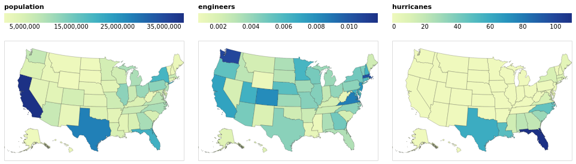
Open this visualization in the Vega Editor
let popEngHurrData = dataFromUrl "https://raw.githubusercontent.com/vega/vega/master/docs/data/population_engineers_hurricanes.csv" []
plotWidth = 300
viz = [ popEngHurrData
, width plotWidth
, transform
. lookup "id" (usGeoData "states") "id" (LuAs "geo")
$ []
, projection [PrType AlbersUsa]
, encoding
. shape [MName "geo", MmType GeoFeature]
. color [MRepeat Column, MmType Quantitative, MLegend [LOrient LOTop, LGradientLength plotWidth]]
$ []
, mark Geoshape [MStroke "black", MStrokeOpacity 0.2]
]
in toVegaLite
[ specification $ asSpec viz
, resolve
. resolution (RScale [(ChColor, Independent)])
$ []
, repeat [ColumnFields ["population", "engineers", "hurricanes"]]
]
By moving the legend to the top of each visualization, I have taken
advantage of the fixed with (here 300 pixels) to ensure the
color bar uses the full width (with LGradientLength).
Rows and Columns
splomPlot :: VegaLite Source #
We can combine repeated rows and columns to create a grid of views, such as a scatterplot matrix, adding in color encoding to separate out the clusters:
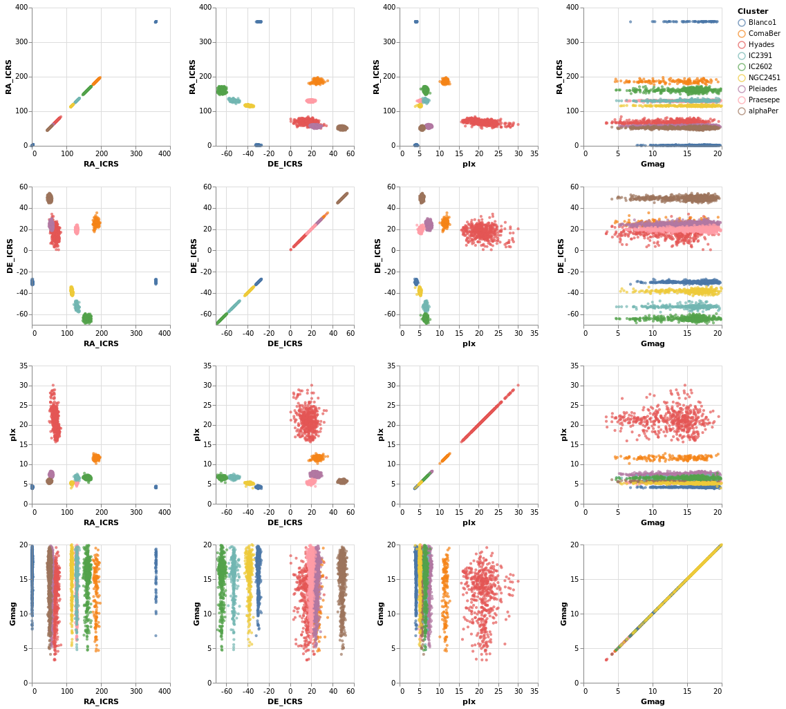
Open this visualization in the Vega Editor
let enc = encoding
. position X [ PRepeat Column, PmType Quantitative ]
. position Y [ PRepeat Row, PmType Quantitative ]
. color [ MName "Cluster", MmType Nominal ]
spec = asSpec [ gaiaData
, mark Point [ MSize 5 ]
, enc [] ]
fields = [ "RA_ICRS", "DE_ICRS", "plx", "Gmag" ]
in toVegaLite
[ repeat [ RowFields fields, ColumnFields fields ]
, specification spec
]
To be honest, this is not the best dataset to use here, as
there is no direct correlation between location (the RA_ICRS
and DE_ICRS fields) and the other columns, but it's the
dataset I chose, so we are stuck with it.
Once you have sub-plots as a specification, you can combine them horizontally and vertically to make a dashboard style visualization. Interested parties should check out the Building a Dashboard section of the Elm Vega-Lite Walkthrough for more details.
Interactivity
Interaction is enabled by creating selections that may be combined with the kinds of specifications already described. Selections involve three components:
- Events are those actions that trigger the interaction such as clicking at a location on screen or pressing a key.
- Points of interest are the elements of the visualization with which the interaction occurs, such as the set of points selected on a scatterplot.
- Predicates (i.e. Boolean functions) identify whether or not something is included in the selection. These need not be limited to only those parts of the visualization directly selected through interaction.
Arguments
| :: Text | The selection name |
| -> Text | The title for the plot |
| -> [PropertySpec] |
The next several plots show different types of selection - select a single point, a range of plots, or follow the mouse - and all have the same basic structure. To avoid repetition, and mistakes, I am going to introduce a helper function which creates the plot structure but without the selection definition, and then use that to build up the plots.
The helper function, selectionProperties, takes two arguments, which are
the selection name and the plot title. The selection name is used
to identify the selection, as a visualization can support multiple
selections, and the plot title has been added mainly to show some
minor customization (the use of TOrient to move the title to the
bottom).
The definition of this helper function is:
selectionProps selName label =
let posOpts field = [ PName field
, PmType Quantitative
, PScale [ SZero False ]
]
enc = encoding
. position X (posOpts "Gmag")
. position Y (posOpts "plx")
. color [ MSelectionCondition (SelectionName selName)
[ MName "Cluster", MmType Nominal ]
[ MString "grey" ]
]
. opacity [ MSelectionCondition (SelectionName selName)
[ MNumber 1.0 ]
[ MNumber 0.3 ]
]
. size [ MSelectionCondition (SelectionName selName)
[ MNumber 40 ]
[ MNumber 5 ]
]
trans = transform
. filter (FExpr "datum.DE_ICRS < -20")
in [ gaiaData
, trans []
, mark Point []
, enc []
, title label [ TOrient SBottom ]
]
The three non-selection-related features added here are that
SZero is used to tell Vega Lite that we do not need 0 displayed
on either axis, which leads to a "tight" bounding box around
the data, a filter is used to select a subset of rows, namely
only those with a declination less than -20 (via FExpr),
and the plot title is moved to the bottom with TOrient.
The main change is that the selection is used in the encoding section,
identified by name, using SelectionName and the supplied
argument. It is used as a filter for the encoding section, where
MSelectionCondition defines the properties to use
when the selection occurs (the first list of properties)
and when it does not (the second list). This is used for
three different encodings:
color, where the selected star is labelled by its cluster color, and all the other are grey;opacity, so that the selected star is fully opaque whereas un-selected stars are partially transparent;- and
size, so that the selected star is much bigger than the others.
When no selection has been made - such as when the visualization is first created - then all points are encoded with the "selected" case (so colorful, fully opaque, and large in this case).
singleSelection :: VegaLite Source #
The actual plot just requires the selection information to be defined and then added to the plot properties:
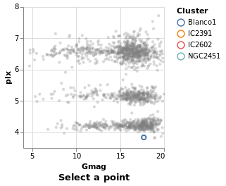
Open this visualization in the Vega Editor
let selLabel = "picked"
sel = selection
. select selLabel Single []
in toVegaLite (sel [] : selectionProperties selLabel "Select a point")
The selection function is used to define the selection, via one or
more applications of the select function. The form of select is
that the selection is named, in this case we use "picked", and the
type is given (a Single click), and then options, which in our case
there aren't any, so an empty list is used.
Note that hvega does not track the selection names, and will allow
you to use a name that you have not defined.
nearestSelection :: VegaLite Source #
The only change here is to add a property to the selection - that
is Nearest True
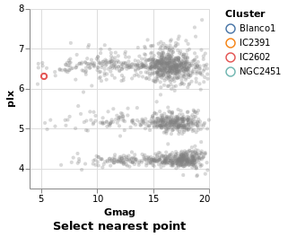
Open this visualization in the Vega Editor
let selLabel = "picked"
sel = selection
. select selLabel Single [ Nearest True ]
in toVegaLite (sel [] : selectionProperties selLabel "Select nearest point")
One consequence of this change is that once a point has been selected you
can not remove this (i.e. un-select the point). This is in contrast to
singleSelection, where clicking on an area with no stars would remove the
previous selection. The Clear property can be added to the list
to define a way to clear the selection.
multiSelection :: VegaLite Source #
The selection can easily be changed to allow multiple stars
to be selected, using shift-click, by swapping from Single to Multi.
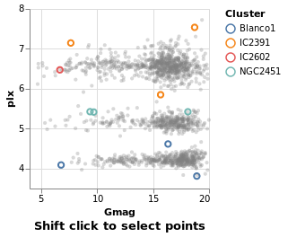
Open this visualization in the Vega Editor
let selLabel = "this is just a label"
sel = selection
. select selLabel Multi []
in toVegaLite (sel [] : selectionProperties selLabel "Shift click to select points")
eventSelection :: VegaLite Source #
We can take advantage of browser event by using On to define which
event to use, such as mouse movement over points:
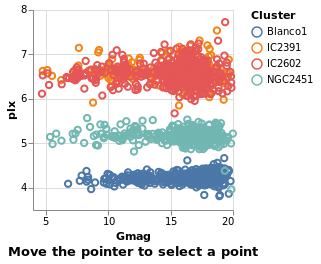
Open this visualization in the Vega Editor
let selLabel = "picked"
sel = selection
. select selLabel Multi [ On "mouseover" ]
in toVegaLite (sel [] : selectionProperties selLabel "Move the pointer to select a point")
The supported list of events is described in the Vega Event-Stream Selectors documentation.
The addition of Nearest True to the list of properties
sent to select would avoid the flickering, as the mouse moves
between the stars.
intervalSelection :: VegaLite Source #
The final Selection value is Interval,
which lets you drag a rectangle to select the interior points:
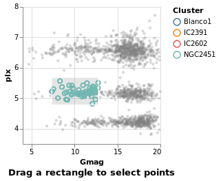
Open this visualization in the Vega Editor
let selLabel = "naming is hard"
sel = selection
. select selLabel Interval [ ]
in toVegaLite (sel [] : selectionProperties selLabel "Drag a rectangle to select points")
intervalSelectionY :: VegaLite Source #
The default interval option is to select a rectangle, but it can be restricted -
such as to select all items within a range along a given axis
using Encodings:
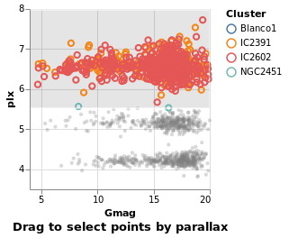
Open this visualization in the Vega Editor
let selLabel = "naming is still hard"
sel = selection
. select selLabel Interval [ Encodings [ ChY ] ]
in toVegaLite (sel [] : selectionProperties selLabel "Drag to select points by parallax")
We'll come back to further things to do with interval selections
when we get to interactive plots below (see bindScales).
Selection Transformations
Simple selections as described above create sets of selected data marks based directly on what was interacted with by the user. Selection transformations allow us to project that direct selection onto other parts of our dataset.
transformSelection :: VegaLite Source #
For example, we can adjust the visualization to select all stars in the same cluster, which is useful in this case since the Blanco1 and IC2391 clusters occupy the same space in the magnitude-parallax plane.
This is invoked simply by adding the Fields constructor to the select
parameters naming the fields onto which we wish to project our selection.
Additionally, we have set the default selection with Empty so that if
nothing is selected, the selection is empty
(as we have previously seen, without this the default selection is the
entire encoded dataset).
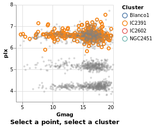
Open this visualization in the Vega Editor
let sel = selection
. select "pick" Single [ Fields [ "Cluster" ]
, Empty
, Nearest True
]
in toVegaLite (sel [] : selectionProperties "pick" "Select a point, select a cluster")
Selection and bindings
Selection need not be limited to direct interaction with the visualization marks. We can also bind the selection to other user-interface components.
legendSelection :: VegaLite Source #
New in Vega Lite 4 is the ability to interact with the legend via
the BindLegend option. In this case
selecting on a cluster in the legend will highlight that cluster in
the visualization (but not vice versa). Notice how the legend now
also follows the MSelectionCondition rules (that is, the unselected
items in the image below are also drawn in grey and are partially
transparent).
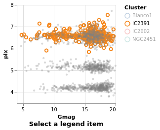
Open this visualization in the Vega Editor
let sel = selection
. select "pick" Single [ BindLegend
(BLField "Cluster")
]
in toVegaLite (sel [] : selectionProperties "pick" "Select a legend item")
widgetSelection :: VegaLite Source #
The Elm Vega-Lite walkthrough uses a dataset which has a
column for which a range-slider makes sense. The dataset I'm
using is less rich, and so I am going to use a HTML select
widget - a drop-down list of values - instead. This lets
the user select all stars from a given cluster, and is
introduced with the Bind and ISelect constructors.
The InOptions list is given the values of the Cluster column that
can be selected: I start with a value not in the list (none) just to
indicate that no values are selected, and then the list of clusters in
this sub-sample (remembering that selectionProperties applies a
declination cut off). Eagle-eyed readers will note that the cluster
names in this list (the clusters variable) end in spaces: this is
because the input data file has the cluster names stored in an
eight-character field, even though it is a tab-separated file.
This surprised me when I first tried this visualization, and
using the value "Blanco1" did not select anything! Isn't working
with data so much fun!
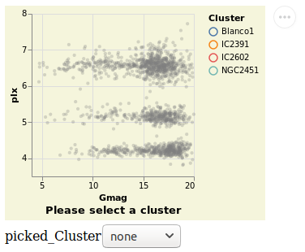
Open this visualization in the Vega Editor
let picked = "picked"
clusters = [ "none", "Blanco1 ", "IC2391 ", "IC2602 ", "NGC2451 " ]
sel = selection
. select picked Single [ Fields [ "Cluster" ]
, Bind [ ISelect "Cluster" [ InOptions clusters ] ]
, Empty
]
conf = configure
. configuration (BackgroundStyle "beige")
in toVegaLite (conf [] :
sel [] :
selectionProperties picked "Please select a cluster")
Originally this example had the selection working both ways - that is the HTML widget can be used to select a cluster and clicking on a point on the visualization updated the HTML widget. However, this no-longer happens and I don't know whether it is a change in Vega-Lite or I changed something in the visualization!
Unlike the other plots shown in the tutorial, this is a screen grab
rather than a PNG file created by Vega Embed. The background color was
changed - following the approach used in
stripPlotWithBackground - to show where the visualization "ends" and
the HTML select element starts. It also shows the Vega Embed "drop-down"
menu in the top-right corner, namely the three dots in a circle.
bindScales :: VegaLite Source #
The selection can also be bound to an axis (or both axes, as in this
case), using BindScales (applying it to the intervalSelectionY plot).
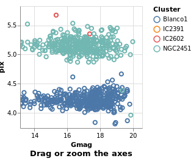
Open this visualization in the Vega Editor
let picked = "picked"
sel = selection
. select picked Interval [ Encodings [ ChX, ChY ], BindScales ]
in toVegaLite (sel [] : selectionProperties picked "Drag or zoom the axes")
The image here was created after panning and zooming into the data.
Multiple Coordinated Views
One of the more powerful aspects of selection-based interaction is in coordinating different views – a selection of a data subset is projected onto all other views of the same data.
coordinatedViews :: VegaLite Source #
The following plot doesn't contain anything new, but allows us to
select a rectangular-range on one plot, and see the same selection
automatically applied to the other plots. This is achieved by
combining the repeat fuction with the selection; this causes the
selection to be projected across all views as it is duplicated.
For this example we use all the clusters, rather than the subset of Southern ones. One trick I use is to convert the Right Ascension values (which have a domain of 0 to 360 degrees, and wrap around at the 0/360 mark), into their cosine values (remembering to convert to radians first), and display that instead. This ensures the "Blanco1" cluster members are spatially co-located on this axis - with values close to 1 - rather than appearing near 0 and 360. This is more to show things you can do with Vega-Lite, rather than necesarily things you should do :-)
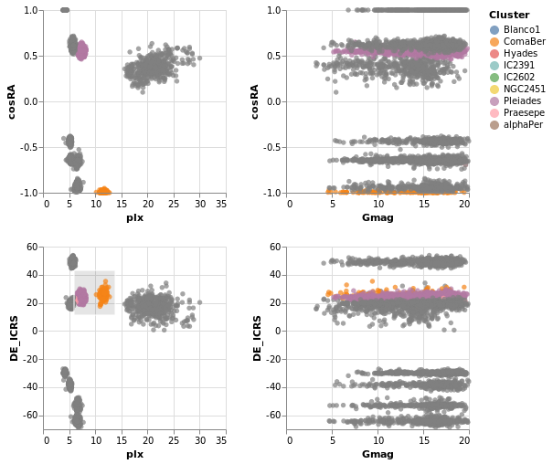
Open this visualization in the Vega Editor
let enc = encoding
. position X [ PRepeat Column, PmType Quantitative ]
. position Y [ PRepeat Row, PmType Quantitative ]
. color
[ MSelectionCondition (SelectionName "picked")
[ MName "Cluster", MmType Nominal ]
[ MString "grey" ]
]
sel = selection
. select "picked" Interval [ ]
trans = transform
. calculateAs "cos(datum.RA_ICRS * PI / 180)" "cosRA"
spec = asSpec
[ gaiaData
, trans []
, mark Circle []
, enc []
, sel []
]
in toVegaLite
[ repeat
[ RowFields [ "cosRA", "DE_ICRS" ]
, ColumnFields [ "plx", "Gmag" ]
]
, specification spec
]
coordinatedViews2 :: VegaLite Source #
If the interval selection is bound the the axes with BindScales
then we can zoom and pan the related plots - i.e. changing the
range displayed in one plot will also change the two plots that
it shares an axis with in this two by two arrangement. The conditional
encoding of the color channel has also been removed.
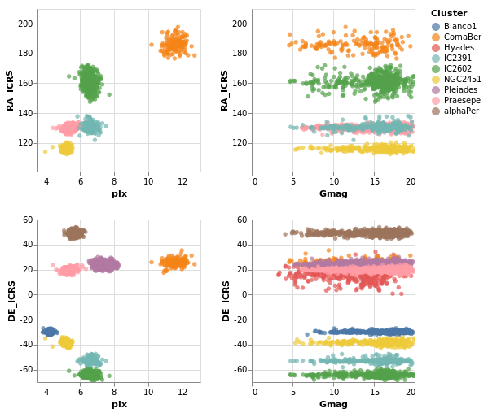
Open this visualization in the Vega Editor
The image was captured after panning and zooming in the "parallax-RA_ICRS" plot.
let enc = encoding
. position X [ PRepeat Column, PmType Quantitative ]
. position Y [ PRepeat Row, PmType Quantitative ]
. color [ MName "Cluster", MmType Nominal ]
sel = selection
. select "picked" Interval [ BindScales ]
spec = asSpec
[ gaiaData
, mark Circle []
, enc []
, sel []
]
in toVegaLite
[ repeat
[ RowFields [ "RA_ICRS", "DE_ICRS" ]
, ColumnFields [ "plx", "Gmag" ]
]
, specification spec
]
The "cosine" transformation has been removed in comparison to
coordinatedViews.
contextAndFocus :: VegaLite Source #
The ability to determine the scale of a chart based on a selection is useful in implementing a common visualization design pattern, that of 'context and focus' (or sometimes referred to as 'overview and detail on demand'). We can achieve this by setting the scale of one view based on the selection in another. The detail view is updated whenever the selected region is changed through interaction:
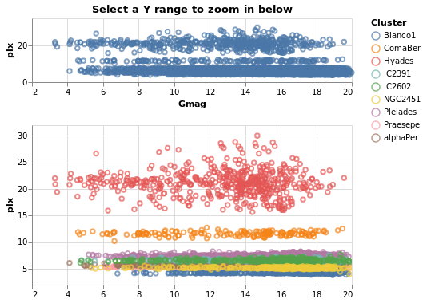
Open this visualization in the Vega Editor
let sel = selection . select "brush" Interval [ Encodings [ ChY ] ]
encContext = encoding
. position X [ PName "Gmag", PmType Quantitative, PScale [ SZero False ] ]
. position Y [ PName "plx", PmType Quantitative ]
specContext = asSpec [ width 400
, height 80
, sel []
, mark Point []
, encContext []
, title "Select a Y range to zoom in below" []
]
encDetail = encoding
. position X [ PName "Gmag"
, PmType Quantitative
, PScale [ SZero False ]
, PAxis [ AxNoTitle ]
]
. position Y [ PName "plx"
, PmType Quantitative
-- prior to 0.11.0.0 this was SDomain
, PScale [ SDomainOpt (DSelection "brush") ]
]
. color [ MName "Cluster", MmType Nominal ]
specDetail =
asSpec [ width 400, mark Point [], encDetail [] ]
in toVegaLite
[ gaiaData
, vConcat [ specContext, specDetail ]
]
Not shown here, but selecting a range of y-values in the top plot
(specContext) will cause the second plot (specDetail) to zoom
in on that range, as the selection is bound to the y axis of this
plot via DSelection.
Cross-filtering
The final example in this section brings together ideas of view composition and interactive selection with data filtering by implementing cross-filtering: the selection of a subset of the data in one view then only displaying that data in the other views.
crossFilter :: VegaLite Source #
Here we show distributions of the four main numeric quantities
in the dataset - position, magnitude, and prallax - using the
totalEnc encoding, and add a second layer which repeats this
data but with a different color (selectedEnc), and that is tied to
the interval-selection along the x axis (ChX).
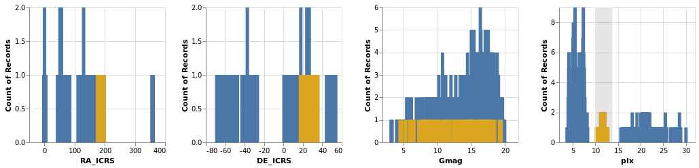
Open this visualization in the Vega Editor
Selecting a small range of parallax values in the fourth plot highlights the associated data in the other three plots.
let sel = selection . select "brush" Interval [ Encodings [ ChX ] ]
filterTrans = transform . filter (FSelection "brush")
-- borrow a function from Elm
pQuant = PmType Quantitative
totalEnc = encoding
. position X [ PRepeat Column, pQuant ]
. position Y [ PAggregate Count, pQuant ]
selectedEnc = totalEnc
. color [ MString "goldenrod" ]
in toVegaLite
[ repeat [ ColumnFields [ "RA_ICRS", "DE_ICRS", "Gmag", "plx" ] ]
, specification $
asSpec
[ gaiaData
, layer
[ asSpec [ mark Bar [], totalEnc [] ]
, asSpec [ sel [], filterTrans [], mark Bar [], selectedEnc [] ]
]
]
]
Smoothing and Regressing
Vega Lite 4 introduces several ways to "smooth" or "fit" your
data. I've already played around with kernel-density estimation
- via the density transform that was used in densityParallax -
so now I get to try out loess and regression.
loessExample :: VegaLite Source #
The loess transform will generate new coordinate pairs for the
independent and dependent values based on an existing pair.
The name stands for
locally-estimated scatterplot smoothing,
and here I use it to look for any possible relationship between the
magnitude and parallax of each star in a cluster. I don't expect
there to really be any (as we've seen before, the distribution
is pretty flat), but it's the data I have to play with in this
tutorial.
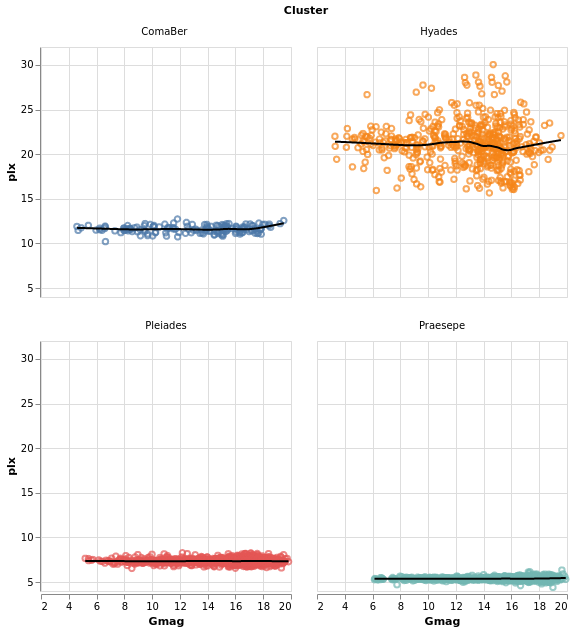
Open this visualization in the Vega Editor
let simplify = transform
. filter (FExpr "(datum.DE_ICRS >= 0) & (datum.DE_ICRS <= 40)")
baseEnc = encoding
. position X [ PName "Gmag"
, PmType Quantitative
, PScale [ SZero False ]
]
. position Y [ PName "plx"
, PmType Quantitative
, PScale [ SZero False ]
]
rawEnc = baseEnc
. color [ MName "Cluster"
, MLegend []
]
rawLayer = asSpec [ rawEnc [], mark Point [] ]
trans = transform
. loess "plx" "Gmag" [ LsGroupBy [ "Cluster" ] ]
trendLayer = asSpec [ trans []
, baseEnc []
, mark Line [ MStroke "black"
, MStrokeWidth 2
]
]
frameSpec = asSpec [ width 250
, height 250
, layer [ rawLayer, trendLayer ] ]
in toVegaLite
[ gaiaData
, simplify []
, columns 2
, facetFlow [ FName "Cluster", FmType Nominal ]
, specification frameSpec
]
The data is filtered to select only four clusters, ensuring that the two closest (i.e. they have the largest parallax values) are included as they are likely to be the most-interesting to look at (because of the spread of parallax values).
The LsGroupBy option is used to ensure the calculation is done
per cluster, and then multiple layers are used to compare the
raw with the "smoothed" data in a faceted display.
regressionExample :: VegaLite Source #
This is the same data as loessExample, but using a linear
regression model to try and explain the data. Practically,
the only things that have changed are switching from
loess to regression, and displaying all the data in
a single visualization.
Open this visualization in the Vega Editor
let simplify = transform
. filter (FExpr "(datum.DE_ICRS >= 0) & (datum.DE_ICRS <= 40)")
axis pos lbl = position pos [ PName lbl
, PmType Quantitative
, PScale [ SZero False ]
]
enc = encoding
. axis X "Gmag"
. axis Y "plx"
. color [ MName "Cluster" ]
rawLayer = asSpec [ enc [], mark Point [] ]
trans = transform
. regression "plx" "Gmag" [ RgGroupBy [ "Cluster" ] ]
trendLayer = asSpec [ trans []
, enc []
, mark Line [ MStroke "black"
, MStrokeWidth 2
]
]
in toVegaLite
[ width 300
, height 300
, gaiaData
, simplify []
, layer [ rawLayer, trendLayer ]
]
In this example I used the default method - RgLinear - but other
options are possible (set with the RgMethod option).
Errors: lines, bars, bands, and boxes
Here we dive into some of the ways for representing the spread of a value, focussing on the "error" of a variable.
errorManual :: VegaLite Source #
We have already seen "error bars" in the layeredDiversion plot, where
the Rule type was used to draw a line between the Y and Y2
encodings. In that example the two positions were calculated "on the
fly" by Vega-Lite (using the Min and Max aggregation operations).
In this example I use the data to calculate the display range,
namely plx - e_plx to plx + e_plx. These are mapped to the
X and X2 channels (not because it makes a better visualization,
but just to show you can create lines along the x axis), and a
small-multiples approach is used to separate out the clusters, but
only after a filter designed to select the two clusters - with the
"most interesting" data for this plot - has been applied.
Open this visualization in the Vega Editor
let trans = transform
. filter (FExpr "datum.Cluster[0] == 'C' || datum.Cluster[0] == 'H'")
. calculateAs "datum.plx - datum.e_plx" "plx_lo"
. calculateAs "datum.plx + datum.e_plx" "plx_hi"
errorEnc = encoding
. position X [ PName "plx_lo"
, PmType Quantitative
, PScale [SZero False]
, PAxis [ AxTitle "parallax (mas)" ]
]
. position X2 [ PName "plx_hi" ]
. position Y [ PName "Gmag", PmType Quantitative ]
. column [ FName "Cluster", FmType Nominal ]
sel = selection
. select "picked" Interval [ BindScales ]
in toVegaLite [ gaiaData
, trans []
, errorEnc []
, mark Rule []
, sel []
]
For the interested reader, it was the calculation of the "plx_hi"
column that lead me to the discovery that the columns were being
read in as a string, and the introduction of the Parse option
to gaiaData.
As can be seen, the e_plx terms are generally very small. This is
good for anyone using the data, as we want precise measurements, but
makes it harder for me to come up with meaningful visualizations! I
have taken advantage of the BindScales interaction to zoom in on
a subset of stars which show larger parallax errors:
errorAuto :: VegaLite Source #
Alternatively, I could have made life simpler for myself and used
the ErrorBar (or ErrorBand) mark type, together with XError
(or YError) to indicate that the channel gives the offset from
the central value. For this visualization I restrict to a single
cluster (since I now know there's only one in this sample which
begins with C), but retain the column encoding as a means
to getting a useful title. I've also switched things so that the
errors are back along the y axis.
Open this visualization in the Vega Editor
let trans = transform
. filter (FExpr "datum.Cluster[0] == 'C'")
errorEnc = encoding
. position Y [ PName "plx"
, PmType Quantitative
, PScale [SZero False]
, PAxis [ AxTitle "parallax (mas)" ]
]
. position YError [ PName "e_plx" ]
. position X [ PName "Gmag", PmType Quantitative ]
. column [ FName "Cluster", FmType Nominal ]
in toVegaLite [ gaiaData
, trans []
, errorEnc []
, mark ErrorBar []
]
errorBars :: VegaLite Source #
In this plot the error range is calculated by Vega-Lite,
and is taken from the standard deviation of the Gmag field
(StdDev). The MTicks and MRule constructors are used to
color the different parts of the error bars. Since the error bar
does not reference the central value, a separate layer is used
to add a square symbol (SymSquare) at the average (Mean)
value of the distribution.
Open this visualization in the Vega Editor
let cluster = position X [ PName "Cluster", PmType Nominal ]
barOpts = [ MExtent StdDev
, MTicks [ MColor "purple" ]
, MRule [ MColor "teal" ]
]
range = [ mark ErrorBar barOpts
, encoding
. position Y [ PName "Gmag"
, PmType Quantitative
, PScale [ SZero False ]
]
$ []
]
center = [ mark Point [ MShape SymSquare, MSize 20 ]
, encoding
. position Y [ PName "Gmag"
, PmType Quantitative
, PmType Mean
]
$ []
]
in toVegaLite
[ gaiaData
, encoding (cluster [])
, layer (map asSpec [ range, center ])
, width 300
, height 300
]
errorBand :: VegaLite Source #
The next plot shows the ErrorBand mark, which fills the area between
the chosen range with a color, and optional borders. Here the
blue band shows the calculated standard deviation - as used in
errorBars - and the gray band with borders shows the inter-quartile
range. On top of these are drawn the median (blue) and median (green
dashed) lines.
Open this visualization in the Vega Editor
let posY extra = position Y ([ PName "Gmag"
, PmType Quantitative
, PScale [ SZero False ]
] ++ extra) []
bands = [ [ encoding (posY [])
, mark ErrorBand [ MExtent StdDev ]
]
, [ encoding (posY [])
, mark ErrorBand [ MExtent Iqr
, MBorders [ MStrokeDash [ 6, 2 ] ]
, MColor "gray"
]
]
, [ encoding (posY [ PAggregate Median ])
, mark Line []
]
, [ encoding (posY [ PAggregate Mean ])
, mark Line [ MColor "green"
, MStrokeDash [ 6, 2, 4, 2 ]
]
]
]
in toVegaLite
[ gaiaData
, encoding (position X [ PName "Cluster", PmType Nominal ] [])
, layer (map asSpec bands)
, width 300
, height 300
, title "Comparing ranges" []
]
Note that I don't think this is a good visualization
for this particular dataset, since it implies there's a
connection or correlation between clusters, as given by the
x-axis ordering, but the aim here is to show how to use hvega
rather than creating sensible plots!
An alternative visualization of a distribution is the "box and
whiskers" plot, which can be achieved in hvega with the
Boxplot mark. The example below shows the default settings, but
the various components can be controlled with MBox, MMedian,
MOutliers, and MTicks.
Open this visualization in the Vega Editor
toVegaLite
[ gaiaData
, encoding
. position X [ PName "Cluster", PmType Nominal ]
. position Y [ PName "Gmag", PmType Quantitative ]
$ []
, mark Boxplot []
, width 300
, height 300
]
The Boxplot option supports two different "ranges":
- the default is the Tukey Box plot, where the whiskers span
a range
Q1 - k * IQRtoQ3 + k * IQR,IQR = Q3 - Q1,Q1andQ3are the lower and upper inter-quartile values (so 25 and 75 per cent of the distribution), andkdefaults to 1.5 but can be changed withIqrScale; - or
ExRange, which uses the full range of the data (i.e. minimum to maximum values).
comparingErrors :: VegaLite Source #
Here I combine errorBox with smallMultiples2 so we can compare
the distribution (from the histogram) with that from the box plot.
Open this visualization in the Vega Editor
let histEnc = encoding
. position X [ PName "Gmag", PmType Quantitative, PBin [] ]
. position Y yAxis
. color [ MName "Cluster", MmType Nominal, MLegend [] ]
errEnc = encoding
. position X [ PName "Gmag", PmType Quantitative ]
. position Y [ PNumber 80 ]
. color [ MName "Cluster", MmType Nominal, MLegend [] ]
yAxis = [ PAggregate Count
, PmType Quantitative
, PAxis [ AxTitle "Number of Stars" ]
]
boxOpts = [ MMedian [ MColor "black" ]
, MBox [ MStroke "white" ]
, MNoOutliers
]
histSpec = asSpec [ mark Bar [], histEnc [] ]
errSpec = asSpec [ mark Boxplot boxOpts, errEnc [] ]
combinedSpec = asSpec [ layer [ histSpec, errSpec ] ]
in toVegaLite
[ gaiaData
, columns 3
, facetFlow [ FName "Cluster", FmType Nominal ]
, specification combinedSpec
]
The main additions here are the configuration of the box plot - with
MMedian, MBox (used to ensure the box is visually distinct from
the bar for the Pleiades cluster, where they overlap), and MNoOutliers
(to turn off the display of the outliers) - and the use of PNumber
to define the location on the y axis of the boxplot visualization.
Note that PNumber is defined in pixel units, with 0 being the
top of the visualization and 80 was found by trial and error.
Dashboard-esque
In the following visualization I try to combine as many of the concepts we have explored in this tutorial into one. There are layers, combined visualizations, and a selection that ties the different plots together! How much more could you want?
combinedPlot :: VegaLite Source #
This is based on the Marginal Histogram example from the Vega-Lite Example Gallery. There is very-little new in this plot, in that pretty-much everything has been shown before. However, there are some interesting wrinkles, such as
- combining multiple plots, in this case the "top" area - which is
a histogram on top of a plot which is itself a "map" and
a histogram - and "bottom" area - which is just a point plot -
requires judicious use of
asSpec; - selection works in both the main plots - the "map" and "point"
plots - to highlight all stars in the same cluster, and I was
pleasantly surprised to find out I could just use the same selection
specification (
selCluster) in both (hopefully I am not just enjoying a hole in the Vega-Lite specification); - I have been perhaps too defensive in defining the Right Ascension
and Declination axes in the relevant plots, as I want to make sure
the histogram bins and plot axes are well aligned (that is the
NiceFalse - I am not 100% sure I understand what is going on with the
grid labels on the Declination axis, as I had thought I was
asking for marks every 15 degrees, but the plot shows them
every 30 degrees (however, if I change the
deTicksarray then the marks change in ways I currently do not understand); - and I have decided to display Right Ascension in hours, rather than degrees, because why have one way to measure a value when you can have many!
let trans = transform
. calculateAs "datum.RA_ICRS / 15" "RA"
quant n = [ PName n, PmType Quantitative ]
big = 400
small = 100
wmain = width big
hmain = height big
wsub = width small
hsub = height small
noTitle = PAxis [ AxNoTitle ]
raAxis = [ PScale [ SDomain (DNumbers [ 0, 24 ])
, SNice (IsNice False)
]
, PSort [ Descending ]
, PAxis [ AxTitle "Right Ascension (hours)" ]
]
deMin = -90
deMax = 90
deStep = 15
-- we do not get ticks/grids at all these values, but it does
-- something (e.g. if do not specify the axis ticks are different)
--
deTicks = Numbers [ deMin, deMin + deStep .. deMax ]
deAxis = [ PScale [ SDomain (DNumbers [ deMin, deMax ])
, SNice (IsNice False)
]
, PAxis [ AxTitle "Declination (degrees)"
, AxValues deTicks
]
]
colorEnc = color [ MSelectionCondition (SelectionName "pick")
[ MName "Cluster", MmType Nominal ]
[ MString "grey" ]
]
mapEnc = encoding
. position X (quant "RA" ++ raAxis)
. position Y (quant "DE_ICRS" ++ deAxis)
. colorEnc
circleMark = mark Circle [ MOpacity 0.5 ]
mapSpec = asSpec [ mapEnc []
, circleMark
, wmain
, hmain
, selCluster []
]
-- histogram of the RA values
--
raBinning = [ PBin [ Extent 0 24
, Step 2
, Nice False
]
, PSort [ Descending ]
, PAxis []
]
-- histogram of the Declination values
--
deBinning = [ PBin [ Extent deMin deMax
, Step deStep
, Nice False
]
, PAxis []
]
histAxis = [ PAggregate Count
, PmType Quantitative
, noTitle
, PScale [ SDomain (DNumbers [ 0, 3000 ]) ]
]
raEnc = encoding
. position X (quant "RA" ++ raBinning)
. position Y histAxis
deEnc = encoding
. position Y (quant "DE_ICRS" ++ deBinning)
. position X histAxis
allRA = [ raEnc []
, mark Bar [ MColor "gray" ]
]
filtRA = [ filterCluster []
, raEnc
. colorEnc
$ []
, mark Bar []
]
allDE = [ deEnc []
, mark Bar [ MColor "gray" ]
]
filtDE = [ filterCluster []
, deEnc
. colorEnc
$ []
, mark Bar []
]
raSpec = asSpec [ wmain, hsub, layer [ asSpec allRA, asSpec filtRA ] ]
deSpec = asSpec [ hmain, wsub, layer [ asSpec allDE, asSpec filtDE ] ]
borderSpacing = 20
mapAndDecSpec = asSpec [ spacing borderSpacing
, bounds Flush
, hConcat [ mapSpec, deSpec ]
]
histSpecs = [ raSpec, mapAndDecSpec ]
-- select the cluster which the star belongs to; do not use
-- "nearest click" as that means a user can not cancel the
-- selection.
--
pick = "pick"
selCluster = selection
. select pick Single [ Fields [ "Cluster" ] ]
filterCluster = transform
. filter (FSelection pick)
plxOpts = [ PScale [ SType ScLog, SNice (IsNice False) ]
, PAxis [ AxTitle "parallax (milli-arcsecond)" ]
]
gmagOpts = [ PAxis [ AxTitle "G magnitude" ] ]
encData = encoding
. position X (quant "plx" ++ plxOpts)
. position Y (quant "Gmag" ++ gmagOpts)
parallaxSpec = asSpec [ width (big + borderSpacing + small)
, encData
. colorEnc
$ []
, circleMark
, selCluster []
]
allSpecs = [ asSpec [ spacing borderSpacing
, bounds Flush
, vConcat histSpecs
]
, parallaxSpec ]
in toVegaLite
[ gaiaData
, trans []
, vConcat allSpecs
-- remove the "other" axis (e.g. top of Y, right for X)
, configure
. configuration (ViewStyle [ ViewStroke "transparent" ])
$ []
, title "Gaia data from arXiv:1804.09378" [ TAnchor AMiddle ]
]
Here is the visualization after selecting a star:
The end
The tutorial ends not with a bang, but a few random visualizations I thought of and couldn't find a better place to put them!
duplicateAxis :: VegaLite Source #
This visualization started out when I asked myself if I could
repeat the X axis at the top of the plot. I started off by
trying to use configuration with the AxisTop constructor,
but this didn't work (perhaps I didn't turn on the necessary
option), so I ended up with the following. It does show off
the use of AxLabelExpr and AxDataCondition, but is not
perhaps the most-digestible visualization one could create!
As I could not work out how to duplicate the X axis with only
a single layer, I got creative and duplicated the data and
in the second layer moved the X axis to the top of the plot
with AxOrient, and ensured the data would not be displayed
(by setting the Text value to the empty string).
The axis labels and the tick marks for the two X axes make
use of the datum.index field, which is in the range 0 to 1 inclusive,
which I multiply by 8 (one less than the total number of clusters) and
check if the result is odd or even (ignoring the possibility
of floating-point inaccuracies in the conversion). The odd values are displayed
on the bottom axis and the even values on the top (the first
cluster, in this case Blanco1, has an index value of 0,
so is displayed on the top axis). The AxLabelExpr option
is used to determine the label contents (if the condition
holds then it uses a trimmed and truncated version of the
default label, otherwise it is blank), and
AxDataCondition is used to control the opacity of the
tick marks. I had hoped to show some of the label-overlap
strategies in play here - controlled by AxLabelOverlap - but
they didn't work well with the data and visualization size,
and I realised I could play with the new-to-Vega-Lite-4
AxLabelExpr and AxDataCondition capabilities.
Normally a grid is not drawn for Nominal axes, but I turn
it on (for the first layer) with AxGrid just to help guide
the eye.
Open this visualization in the Vega Editor
let trans = transform
. aggregate [ opAs Count "" "number" ]
[ "Cluster" ]
xAxis f = position X [ PName "Cluster"
, PmType Nominal
, PAxis [ AxLabelAngle 0
, AxOrient (if f then SBottom else STop)
, if f
then AxTitle "Cluster"
else AxNoTitle
, AxLabelExpr (xlabels f)
, AxDataCondition
(Expr (xticks f))
(CAxTickOpacity 1 0)
, AxGrid f
]
]
xlabels f =
let v = if f then "1" else "0"
in "if((datum.index * 8) % 2 ==" <> v <> ", truncate(trim(datum.label), 5), '')"
xticks f =
let v = if f then "1" else "0"
in "(datum.index * 8) % 2 ==" <> v
yAxis f = position Y [ PName "number"
, PmType Quantitative
, PAxis [ if f
then AxTitle "Number of stars"
else AxNoTitle ]
]
-- f is True indicates first Layer (bottom X axis, should display
-- the Y axis).
enc f = encoding
. xAxis f
. yAxis f
dataLayer = asSpec [ enc True []
, mark Circle []
]
axLayer = asSpec [ enc False []
, mark Text [ MText "" ]
]
in toVegaLite [ gaiaData
, trans []
, layer [ dataLayer, axLayer ]
]
If anyone can come up with a simpler way to duplicate the X axis I'm all ears!
compareCounts :: VegaLite Source #
Way back in the tutorial I noted - in densityParallaxGrouped - that
setting the density option DnCounts to True resulted in
counts that were too high. This is because the values need to be
divided by the bin width, as shown in this visualization, where I:
- use an explicit grid for the density calculation, choosing the
DnExtentandDnStepsparameters to create a bin width of 0.1 in parallax; - sum up the resulting KDE (the
"ykde"field) to create"ycounts"; - normalize the counts by the bin with using
calculateAsto create the"count"field; - which is plotted as a diamond, on top of a line showing the
actual counts (calculated following
starCount).
Open this visualization in the Vega Editor
let densTrans = transform
. density "plx" [ DnAs "xkde" "ykde"
, DnGroupBy [ "Cluster" ]
, DnCounts True
, DnExtent 3 30
, DnSteps 270
]
. aggregate [ opAs Sum "ykde" "ycounts" ]
[ "Cluster" ]
. calculateAs "datum.ycounts / 10" "count"
enc = encoding
. position X [ PName "Cluster"
, PmType Nominal
]
. position Y [ PName "count"
, PmType Quantitative
, PAxis [ AxTitle "Counts" ]
]
densLayer = asSpec [ densTrans []
, enc []
, mark Point [ MShape SymDiamond
, MStroke "black"
, MSize 200
]
]
countTrans = transform
. aggregate [ opAs Count "" "count" ] [ "Cluster" ]
countLayer = asSpec [ countTrans [], enc [], mark Line [] ]
in toVegaLite
[ gaiaData
, layer [ countLayer, densLayer ]
]
Note that the same encoding specification is used on both layers,
since I arranged the data transforms to create two columns -
"Cluster" and "count" - in both cases.
parallaxView :: VegaLite Source #
In this example I compare the parallax values
- as the raw distribution, using the ticks display we saw in
the very first plot,
stripPlot, (although with a few adjustments) - against a smoothed version of the distribution, calculated using
the
regressiontransform (e.g.densityParallax).
The only new things here are configuration options
for the X axis - that is, the use of AxLabels, along with
AxNoTitle, to ensure the X axis of the density plot only has
grid lines - and the legend options were set to
center the title.
Open this visualization in the Vega Editor
let plxScale = PScale [ SType ScLog
, SNice (IsNice False)
, SDomain (DNumbers [3, 30])
]
opacityEnc ounsel osel =
opacity [ MSelectionCondition (SelectionName selName)
[ MNumber osel ]
[ MNumber ounsel ]
]
tickEnc = encoding
. position X [ PName "plx"
, PmType Quantitative
, plxScale
, PAxis [ AxTitle "Parallax (mas)" ]
]
. color [ MName "Cluster"
, MmType Nominal
, MLegend []
]
. opacityEnc 0.05 0.3
plotWidth = width 600
tickLayer = asSpec [ plotWidth
, tickEnc []
, mark Tick [ ] ]
densTrans = transform
. density "plx" [ DnGroupBy [ "Cluster" ]
, DnAs "value" "density"
]
densEnc = encoding
. position X [ PName "value"
, PmType Quantitative
, plxScale
, PAxis [ AxNoTitle
, AxLabels False
]
]
. position Y [ PName "density"
, PmType Quantitative
, PAxis [ AxTitle "Density" ]
]
. color [ MName "Cluster"
, MmType Nominal
, MLegend [ LOrient LOBottom
, LTitleAnchor AMiddle
, LTitle "Select a cluster"
]
, MScale [ SScheme "category10" [] ]
]
. opacityEnc 0.3 1
densLayer = asSpec [ plotWidth
, densTrans []
, densEnc []
, sel []
, mark Line [ ]
]
selName = "legend"
sel = selection
. select selName Single [ BindLegend (BLField "Cluster") ]
in toVegaLite
[ gaiaData
, spacing 0
, bounds Flush
, vConcat [ densLayer, tickLayer ]
]
I have also changed the color scheme to "category10", which isn't
necessarily any better than the default ("tableau10"), but is at least
different (I was hoping to get a better separation in color space for
the IC2391 and IC2602 clusters, but quickly gave up after
trying out a few options).
Here is the visualization after selecting the label "NGC2451"
in the legend:
Aitoff projections
Thanks to Jo Wood for
coming up with these examples.
They are similar to skyPlot, but instead of using one of the pre-defined
projections, they creates their own: the
Aitoff projection.
I follow Jo's example and break out four helper routines:
aitoffTrans ::FieldName->FieldName->BuildTransformSpecsaitoffTrans ra dec = calculateAs (ra <> ">180?(" <> ra <> "-360)*PI-180 : " <> ra <> "*PI-180") "lambda" . calculateAs (dec <> "*PI/180") "phi" . calculateAs "acos(cos(datum.phi)*cos(datum.lambda/2))" "alpha" . calculateAs "datum.alpha == 0 ? 1 : sin(datum.alpha) / datum.alpha" "sincAlpha" . calculateAs "360*cos(datum.phi)*sin(datum.lambda2)(PI*datum.sincAlpha)" "x" . calculateAs "180*sin(datum.phi)/(PI*datum.sincAlpha)" "y"
This is used to convert position values to diplay coordinates. The first two calculations convert the angles into radians, first ensuring right ascension is scaled between -180 and 180 degrees rather than 0 to 360 degrees and flipped so we are looking 'out' from the centre the sphere not 'in' from outside (we've seen this before, but not in such a condensed form). The next two calculate the intermediate alpha value and its cardinal sine. The final pair use lambda, phi and alpha to calculate the projected x and y coordinates.
graticuleData :: Double -> Double -> [DataColumn] ->DatagraticuleData lngStep latStep = let lngVals = [-180, lngStep - 180 .. 180] latVals = [-90, latStep - 90 .. 90] nlng = length lngVals nlat = length latVals lng = concat (replicate nlat lngVals) lat = concatMap (replicate nlng) latVals in dataFromColumns [] . dataColumn "lng" (Numbers lng) . dataColumn "lat" (Numbers lat)
This routine just sets up a bunch of points which indicite the grid lines, and is used in the following function.
graticuleSpec :: [VLSpec] graticuleSpec = let trans = transform . aitoffTrans "datum.lng" "datum.lat" enc = encoding . position X [ PName "x", PmType Quantitative, PAxis [] ] . position Y [ PName "y", PmType Quantitative, PAxis [] ] encParallel = enc .detail[DName"lat",DmTypeNominal ] encMeridian = enc . detail [ DName "lng", DmType Nominal ] .order[OName"lat",OmTypeQuantitative ] spec lngStep latStep encs = asSpec [ graticuleData lngStep latStep [] , trans [] , encs [] , mark Line [ MStrokeWidth 0.1, MStroke "black" ] ] specParallel = spec 30 10 encParallel specMeridian = spec 10 2 encMeridian in [ specParallel, specMeridian ]
We then project the lines of longitude and latitude using our Aitoff transformation
and combine them as two layers. Note the use of the detail channel to separate the
coordinates that make up each line of constant longitude (meridian) and
latitude (parallel) and the order channel to sequence the coordinates
of each meridian line in latitude order.
aitoffConfig :: [ConfigureSpec] ->PropertySpecaitoffConfig = configure . configuration (ViewStyle [ ViewNoStroke ]) . configuration (FacetStyle[CompSpacing0 ]) . configuration (HeaderStyle[HLabelAngle0 ]) . configuration (LegendStyle[LeOrientLOBottom,LeNoTitle]) . configuration (Axis[DomainFalse ,GridFalse ,LabelsFalse ,TicksFalse ,NoTitle])
The configuration hides the border line and tweaks a number of settings, some of which we have seen applied directly to the marks themselves.
skyPlotAitoff :: VegaLite Source #
With the helper routines, the actual plot is not very different to other
plots (but note that unlike skyPlot we do not use projection since
we are doing it all ourselves).
let trans = transform
. aitoffTrans "datum.RA_ICRS" "datum.DE_ICRS"
enc = encoding
. position X [ PName "x", PmType Quantitative, PScale [ SNice (IsNice False) ] ]
. position Y [ PName "y", PmType Quantitative, PScale [ SNice (IsNice False) ] ]
. color [ MName "Cluster", MmType Nominal ]
spec = asSpec [ trans [], enc [], mark Circle [ MSize 9 ] ]
in toVegaLite [ aitoffConfig []
, width 570
, height 285
, gaiaData
, layer (spec : graticuleSpec)
]
Since we control the hotizontal and the vertical, it is possible to "rotate" the data to move a different location to the center of the plot (this version has Right Ascension of 0 at the middle). I leave that addition for your entertainment!
clusterCenters :: VegaLite Source #
If we want, we can treat each cluster as a point, and calculate an "average" location. The following visualization presents the average location of each cluster, where we calculate the circular mean of the Right Ascension values (to account for possible wrapping around 0/360 degrees). To see the effect of this correction, we overlay the simple average as unfilled circles: for all clusters except Blanco1, which spans 0 degree meridian, the two match.
let aggTrans = transform
. calculateAs "cos(datum.RA_ICRS * PI / 180)" "cosRA"
. calculateAs "sin(datum.RA_ICRS * PI / 180)" "sinRA"
. aggregate
[ opAs Mean "cosRA" "cosRA0"
, opAs Mean "sinRA" "sinRA0"
, opAs Mean "RA_ICRS" "wrong_ra0"
, opAs Mean "DE_ICRS" "dec0"
]
[ "Cluster" ]
. calculateAs "atan2(datum.sinRA0,datum.cosRA0) * 180.0 / PI" "ra0"
clusterTrans = aggTrans
. aitoffTrans "datum.ra0" "datum.dec0"
pos ax field = position ax [ PName field
, PmType Quantitative
, PScale [SNice (IsNice False)]
]
enc = encoding
. pos X "x"
. pos Y "y"
. color [ MName "Cluster", MmType Nominal, MLegend [] ]
encText = enc
. text [ TName "Cluster", TmType Nominal ]
clusterSpec =
asSpec [ clusterTrans [], enc [], mark Circle [ MSize 90 ] ]
clusterLabelSpec =
asSpec [ clusterTrans [], encText [], mark Text [ MAlign AlignLeft
, MdX 8 ] ]
uncorrectedTrans = aggTrans
. aitoffTrans "datum.wrong_ra0" "datum.dec0"
uncorrectedSpec =
asSpec [ uncorrectedTrans [], enc [], mark Circle [ MSize 200, MFilled False ] ]
in toVegaLite [ aitoffConfig []
, width 570
, height 285
, gaiaData
, layer (clusterSpec : uncorrectedSpec : clusterLabelSpec : graticuleSpec)
]